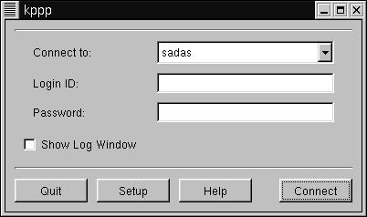
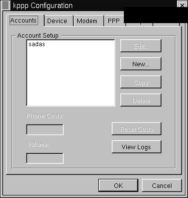
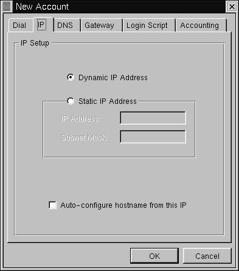
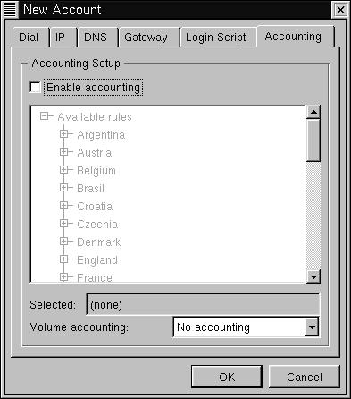
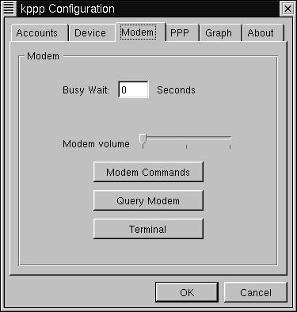
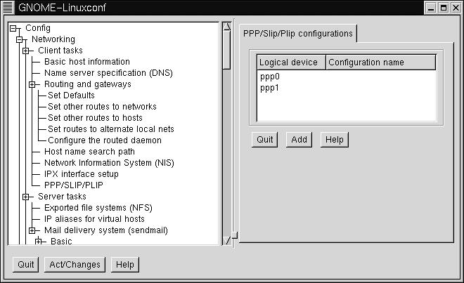
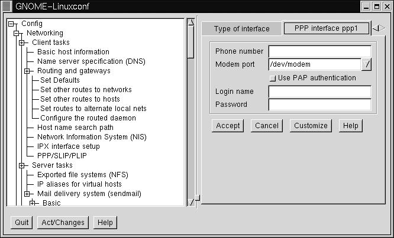
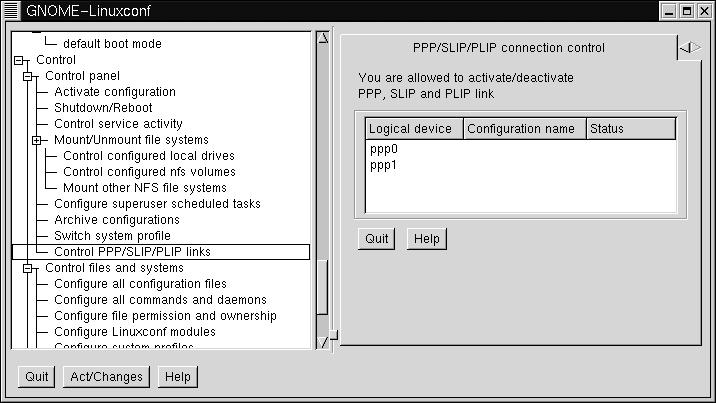

Linux PPP HOWTO
Corwin Light-Williams
Joshua Drake
Copyright © 2000 Commandprompt, Inc
Copyright © 1997 Robert Hart
v4.0, 8 July 2000
- Table of Contents
- About This Document
- 1. How can I help?
- 2. Introduction
- 3. IP Numbers
- 4. Aims of this Document
- 5. Software versions covered
- 6. Other Useful/Important Documents
- 7. Easy Configuration Utilities for PPP
- 8. Debugging
- 9. Overview of what has to be done to get PPP working as a client
- 9.1. Obtaining/Installing the software
- 9.2. Compiling PPP support into the kernel
- 9.3. Obtaining information from your ISP
- 9.4. Configuring your modem and serial port
- 9.5. Setting up Name to Address Resolution (DNS)
- 9.6. PPP and root Privileges
- 9.7. Checking your distribution PPP Files and setting up the PPP Options
- 9.8. If your PPP server uses PAP (Password Authentication Protocol)
- 9.9. Connecting to the PPP server by hand
- 9.10. Automating your PPP Connection
- 9.11. Shutting down the link
- 9.12. If you have problems
- 9.13. After the link comes up
- 9.14. Problems with standard IP services on a Dynamic IP number PPP link
- 9.15. Maintaining a permanent connection to the net with pppd.
- 10. Configuring your Linux Kernel
- 11. Getting the Information you need about the PPP server
- 12. Configuring your modem and serial port
- 13. Setting up Name to Address Resolution (DNS)
- 13.1. The /etc/resolv.conf file
- 13.2. The /etc/host.conf file
- 14. Using PPP and root privileges
- 15. Setting up the PPP connection files
- 16. If your PPP server uses PAP (Password Authentication Protocol)
- 17. Setting up the PPP connection manually
- 18. Automating your connections - Creating the connection scripts
- 19. Testing your connection script
- 20. Shutting down the PPP link
- 21. Getting Help when totally stuck
- 22. Common Problems once the link is working
- 23. Using Internet services with Dynamic IP numbers
- 23.1. Setting up email
- 23.2. Setting Up a local Name server
- 24. Linking two networks using PPP
- 24.1. Setting up the IP numbers
- 24.2. Setting up the routing
- 24.3. Network security
- 25. After the link comes up - the /etc/ppp/ip-up script
- 25.1. Special routing
- 25.2. Handling email queues
- 25.3. A sample /etc/ppp/ip-up script
- 25.4. Handling email
- 26. Using /etc/ppp/ip-down
- 27. Routing issues on a LAN
- 27.1. Note on Security
- 28. Setting up a PPP server
- 29. Using PPP across a null modem (direct serial) connection
- 30. PPPoE or PPP over Ethernet
About This Document
This document was updated via assistance from the Open Source Documentation Fund. This is a LinuxPorts.Com Document for the Linux Documentation Project
This document shows how to connect your Linux PC to a PPP server, how to use PPP to link two LANs together and provides one method of setting up your Linux computer as a PPP server.The document also provides help in debugging non-functional PPP connections.
This document is distributed under the terms of the GPL (GNU Public License).
Chapter 1. How can I help?
We will try to provide comprehensive coverage for all Linux PPP implementations. However time is of the essence and this document is not a revenue maker. We provide this information in hopes that it will be useful to the Linux Community and newly converted Linux users. We are always interested in feedback and will implement every relevant topic possible to this HOWTO.
If you would like to assist with this document, there are two primary avenues that are extremely helpful.
Purchase an OpenBook! If you purchase OpenDocs books, OpenDocs Publishing will donate a portion of the proceeds back to the Open Source Documentation Fund. This fund assists authors financially while they continue to write documentation for Open Source projects.
Provide a monetary contribution to the document. By doing so you can even request what you would like to have updated, written, or expanded with in the document. If it is a major revision (such as writing sections specifically for Mandrake or Caldera) please contact Command Prompt, Inc.
If you have written something that you would like to contribute just email it to poet@linuxports.com
Chapter 2. Introduction
PPP (the Point to Point Protocol) is a mechanism for creating and running IP (the Internet Protocol) and other network protocols over a serial link - be that a direct serial connection (using a null-modem cable), over a telnet established link, or a link made using modems and telephone lines (and of course using digital lines such as ISDN).
Using PPP, you can connect your Linux PC to a PPP server and access the resources of the network to which the server is connected (almost) as if you were directly connected to that network.
You can also set up your Linux PC as a PPP server, so that other computers can dial into your computer and access the resources on your local PC and/or network.
As PPP is a peer-to-peer system, you can also use PPP on two Linux PCs to link together two networks (or a local network to the Internet), creating a Wide Area Network (WAN).
One major difference between serial based PPP and an Ethernet connection is of course speed - a standard Ethernet connection operates at 10 Mbs (Mega - million bits per second) or 100 Mbs maximum theoretical throughput, whereas an analogue modem operates at speeds up to 56 kbps (kilo - thousand bits per second).
Also, depending on the type of PPP connection, there may be some limitations in usage of some applications and services.
2.1. Clients and Servers
PPP is strictly a peer to peer protocol; there is (technically) no difference between the machine that dials in and the machine that is dialed into. However, for clarity's sake, it is useful to think in terms of servers and clients.
When you dial into a site to establish a PPP connection, you are a client. The machine to which you connect is the server.
When you are setting up a Linux box to receive and handle dial-in PPP connections, you are setting up a PPP server.
Any Linux PC can be both a PPP server and client - even simultaneously if you have more than one serial port (and modem if necessary). As stated above, there is no real difference between clients and servers as far as PPP is concerned, once the connection is made.
This document refers to the machine that initiates the call (that dials in) as the CLIENT, whilst the machine that answers the telephone, checks the authentication of the dial in request (using user names, passwords and possibly other mechanisms) is referred to as the SERVER.
The use of PPP as a client to link one or more machines at a location into the Internet is, probably, the one in which most people are interested - that is using their Linux PC as a client.
The procedure described in this document will allow you to establish and automate your Internet connection.
This document will also give you guidance in setting up your Linux PC as a PPP server and in linking two LANs together (with full routing) using PPP (this is frequently characterized as establishing a WAN - wide area network - link).
2.2. Differences between Linux distributions
There are many different Linux distributions and they all have their own idiosyncrasies and ways of doing things.
In particular, there are two different ways a Linux (and Unix) computer actually starts up, configures its interfaces, and so forth.
These are BSD system initialization and System V system initialization. If you dip into some of the Unix news groups, you will find occasional religious wars between proponents of these two systems. If that sort of thing amuses you, have fun burning bandwidth and join in!
Possibly the most widely used distributions are
Slackware which uses BSD style system initialization
Red Hat (and its former associate Caldera) which use SysV system initialization (although in a slightly modified form)
Debian which uses SysV system initialization
BSD style initialization typically keeps its initialization files in /etc/... and these files are:-
/etc/rc /etc/rc.local /etc/rc.serial (and possibly other files) |
Of recent times, some BSD system initialization schemes use a /etc/rc.d... directory to hold the start up file rather than putting everything into /etc.
System V initialization keeps its initialization files in directories under /etc/... or /etc/rc.d/... and a number of subdirectories under there:-
drwxr-xr-x 2 root root 1024 Jul 6 15:12 init.d -rwxr-xr-x 1 root root 1776 Feb 9 05:01 rc -rwxr-xr-x 1 root root 820 Jan 2 1996 rc.local -rwxr-xr-x 1 root root 2567 Jul 5 20:30 rc.sysinit drwxr-xr-x 2 root root 1024 Jul 6 15:12 rc0.d drwxr-xr-x 2 root root 1024 Jul 6 15:12 rc1.d drwxr-xr-x 2 root root 1024 Jul 6 15:12 rc2.d drwxr-xr-x 2 root root 1024 Jul 18 18:07 rc3.d drwxr-xr-x 2 root root 1024 May 27 1995 rc4.d drwxr-xr-x 2 root root 1024 Jul 6 15:12 rc5.d drwxr-xr-x 2 root root 1024 Jul 6 15:12 rc6.d |
If you are trying to track down where your Ethernet interface and associated network routes are actually configured, you will need to track through these files to actually find where the commands are that do this.
2.3. PPP configuration tools
There are many good tools available for configuring and using PPP on Linux. This document will try to cover some of the more popular ones, including:
kppp A PPP setup and dialer tool for KDE.
WvDial Another PPP driver for Linux, with an emphasis on simplicity.
RP3...(short for RedHat PPP). It is a simple configuration program with a "wizard" interface- it asks a series of questions.
Linuxconf A generalized tool for configuring and managing your Linux machine, it has a section that helps configure PPP.
Chapter 3. IP Numbers
Every device that connects to the Internet must have its own, unique IP number. These are assigned centrally by a designated authority for each country.
If you are connecting a local area network (LAN) to the Internet, YOU MUST use an IP number from your own assigned network range for all the computers and devices you have on your LAN. You MUST NOT pick IP numbers out of the air and use these whilst connecting to another LAN (let alone the Internet). At worst this will simply not work at all and could cause total havoc as your 'stolen' IP number starts interfering with the communications of another computer that is already using the IP number you have picked out of the air.
Please note that the IP numbers used throughout this document (with some exceptions) are from the 'unconnected network numbers' series that are reserved for use by networks that are not (ever) connected to the Internet.
There are IP numbers that are specifically dedicated to LANs that do not connect to the Internet. The IP number sequences are:-
One A Class Network Address 10.0.0.0 (netmask 255.0.0.0)
16 B Class Network Addresses 172.16.0.0 - 172.31.0.0 (netmask 255.255.0.0)
256 C Class Network Addresses 192.168.0.0 - 192.168.255.0 (netmask 255.255.255.0)
If you have a LAN for which you have not been allocated IP numbers by the responsible authority in your country, you should use one of the network numbers from the above sequences for your machines.
These numbers should never be used on the Internet.
However, they can be used for the local Ethernet on a machine that is connecting to the Internet. This is because IP numbers are actually allocated to a network interface, not to a computer. So whilst your Ethernet interface may use 10.0.0.1 (for example), when you hook onto the Internet using PPP, your PPP interface will be given another (and valid) IP number by the server. Your PC will have Internet connectivity, but the other computers on your LAN will not.
However, using Linux and the IP Masquerade (also known as NAT - Network address Translation) capabilities of the Linux and the ipfwadm software, you can connect your LAN to the Internet (with some restriction of services), even if you do not have valid IP numbers for the machines on your Ethernet.
For more information on how to do this see the IP Masquerade mini-HOWTO at Linux IP Masquerade mini HOWTO
For most users, who are connecting a single machine to an Internet service provider via PPP, obtaining an IP number (or more accurately, a network number) will not be necessary.
If you wish to connect a small LAN to the Internet, many Internet Service Providers (ISPs) can provide you with a dedicated subnet (a specific sequence of IP numbers) from their existing IP address space. Alternatively, use IP Masquerading.
For users, who are connecting a single PC to the Internet via an ISP, most providers use dynamic IP number assignment. That is, as part of the connection process, the PPP service you contact will tell your machine what IP number to use for the PPP interface during the current session. This number will not be the same every time you connect to your ISP.
With dynamic IP numbers, you are not necessarily given the same IP number each time you connect. This has implications for server type applications on your Linux machine such as sendmail, ftpd, httpd and so forth. These services are based on the premise that the computer offering the service is accessible at the same IP number all the time (or at least the same fully qualified domain name - FQDN - and that DNS resolution of the name to IP address is available).
The limitations of service due to dynamic IP number assignment (and ways to work around these, where possible) are discussed later in the document.
Chapter 4. Aims of this Document
4.1. Setting up a PPP Client
This document provides guidance to people who wish to use Linux and PPP to dial into a PPP server and set up an IP connection using PPP. It assumes that PPP has been compiled and installed on your Linux machine (but does briefly cover reconfiguring/recompiling your kernel to include PPP support).
Whilst DIP (the standard way of creating a SLIP connection) can be used to set up a PPP connection, DIP scripts are generally quite complex. For this reason, this document does NOT cover using DIP to set up a PPP connection.
Instead, this document describes the standard Linux PPP software (chat/pppd).
4.2. Linking two LANs or a LAN to the Internet using PPP
This document provides (basic) information on linking two LANs or a LAN to the Internet using PPP.
4.3. Using intuitive configuration tools to set up PPP
There are many tools used for configuring your PPP connection. This document will try to cover the most common and easiest to use of said programs.
4.4. Setting up a PPP server
This document provides guidance on how to configure your Linux PC as a PPP server (allowing other people to dial into your Linux PC and establish a PPP connection).
You should note that there are a myriad of ways of setting up Linux as a PPP server. This document gives one method - that used by the author to set up several small PPP servers (each of 16 modems).
This method is known to work well. However, it is not necessarily the best method.
4.5. Using PPP over a direct null modem connection
This document provides a brief overview of using PPP to link two Linux PCs via a null modem cable. It is possible to link other OS's to Linux this way as well. To do so, you will need to consult the documentation for the operating system you are interested in.
4.6. This document at present does NOT cover...
Compiling the PPP daemon software See the documentation that comes with the version of pppd you are using.
Connecting and configuring a modem to Linux (in detail) See the Serial-HOWTO and for modem specific initialization, see Modem Setup Information for information that may help you to configure your modem.
Using DIP to make PPP connections. Use chat instead...
Using socks or IP Masquerade. There are perfectly good documents already covering these two packages.
Using EQL to gang together two modems into a single PPP link. This is covered in the Networking-HOWTO.
Chapter 5. Software versions covered
This HOWTO assumes that you are using a Linux 1.2.x kernel with the PPP 2.1.2 software or 1.3.x/2.0.x/2.2.x kernel with the PPP 2.4.0 software.
This HOWTO will cover version 1.6.18 of KPPP.
This HOWTO will cover version 1.41 of WvDial.
This HOWTO will cover version 0.03 of PPPoE.
This HOWTO will cover version 1.18 of Linuxconf.
Please try to use the latest versions of software, as many bugs are fixed as time goes on.
Chapter 6. Other Useful/Important Documents
Users are advised to read :-
The documentation that comes with the PPP package.
The pppd and chat man pages; (use man chat and man pppd to explore these.)
The Linux Network Administration Guide (NAG); see The Network Administrators' Guide.
The Net-2/3 HOWTO; see Linux Networking-HOWTO.
Linux kernel documentation installed in /usr/src/linux/Documentation when you install the Linux source code.
The modem setup information page - see Modem Setup Information.
The excellent Unix/Linux books published by O'Reilly and Associates. See (O'Reilly and Associates On-Line Catalogue). If you are new to Unix/Linux, run (don't walk) to your nearest computer book shop and invest in a number of these immediately!
The PPP-FAQ maintained by Al Longyear, available from Linux PPP-FAQ. This contains a great deal of useful information in question/answer format that is very useful when working out why PPP is not working (properly).
The growing number of Linux books from various publishing houses and authors; You are actively encouraged to check the currency of these books. Linux development and distributions tend to evolve fairly rapidly, whilst the revision of books move (generally) much more slowly! Buying an excellent book (and there are many) that is now out of date will cause new users considerable confusion and frustration.
The documentation associated with the PPP tool(s) you are using The package specific documentation, usually easily available, is often the most useful when dealing with a specific tool.
The best general starting point for Linux documentation is The Linux Documentation Project Home Page. The HOWTO's tend to be revised reasonably regularly.
Whilst you can use this document to create your PPP link without reading any of these documents, you will have a far better understanding of what is going on if you do so! You will also be able to address problems yourself (or at least ask more intelligent questions on the comp.os.linux... newsgroups or Linux mailing lists).
These documents (as well as various others, including the relevant RFCs) provide additional and more detailed explanation than is possible in this HOWTO.
If you are connecting a LAN to the Internet using PPP, you will need to know a reasonable amount about TCP/IP networking. In addition to the documents above, you will find the O'Reilly books "TCP/IP Network Administration" and "Building Internet Firewalls" of considerable benefit!
6.1. Useful Linux Mailing Lists
There are many Linux mailing lists that operate as a means of communication between users of many levels of ability. By all means subscribe to those that interest you and contribute your expertise and views.
A word to the wise: some lists are specifically aimed at "high powered" users and/or specific topics. Whilst no-one will complain if you 'lurk' (subscribe but don't post messages), you are likely to earn heated comments (if not outright flames) if you post 'newbie' questions to inappropriate lists.
This is not because guru level users hate new users, but because these lists are there to handle the specific issues at particular levels of difficulty.
By all means join the lists that offer open subscription, but keep your comments relevant to the subject of the list!
A good starting point for Linux mailing lists is Linux Mailing List Directory
Chapter 7. Easy Configuration Utilities for PPP
7.1. KPPP - The KDE PPP Dialer
http://devel-home.kde.org/~kppp/index.html
KPPP is an easy tool for configuring your PPP links. It comes with the default installation of KDE, and is quite well integrated into that environment.
KPPP also has a good help system built in. If you just right click on the majority of the buttons in the application, a menu will pop up with an item called "Quickhelp". Clicking it will give a quick summary of whatever item you clicked on.
The opening screen of kppp will list any available connections, and allow you to specify a Login ID and password for the connection. There is also a "Show Log Window" option. Selecting this will show a log window. This can be handy if you are trying to debug a connection.

For now, click on the "Setup" button. This will bring up the setup window. It has a series of tabs across the top. Select the one called "Accounts". There will be a list of Accounts, if any.

Select "New" from the right hand side. Another menu will pop up.

First, specify a name for this connection in the "Connection Name" box. A good name would be the name of your ISP. Then enter the phone number. Select the type of authentication. If your ISP hasn't specified otherwise, leave it as "PAP". You can optionally store your password between sessions, but this may be a security risk.
Click on the tab marked "IP". Here you have the option to configure your IP address, either a Dynamic or Static address. You should know what kind you want, specified by your ISP. You can also optionally specify that you wish to configure the hostname for this IP, which means that kppp will name your machine according to the name given to it by your ISP.

Click on the tab marked "DNS". Here you can set up DNS. Fill in the appropriate fields with the information supplied from your ISP.

Click on the "Gateway" tab. Here you can configure your gateway, or router address. If a gateway or router address was specified by your ISP, select "Static Gateway" and enter it in the box below. Otherwise leave this alone. The box marked "Assign the Default Route" should be checked.

The "Login Script" tag is only useful if you specified "Login Script" authentication under the "Dial" tab. If you need to use a Login Script, you can enter it here, as a series of commands. Select the type of command you wish to use, followed by the argument, then click "Add". Click "Remove" to remove a selected command.

The "Accounting" tab allows you to track the number of bytes that you have sent and recieved for a given connection. This can be useful if your ISP tracks the amount of data that you use, and perhaps charges you based on that. If you wish to use accounting, click on the "Enable accounting" box. You can then select a country, if you live in a country that has taxes, tariffs, or other charges based on data transfer. Otherwise, just select either "Bytes in", "Bytes in and out", or "Bytes out". For more information, consult the KPPP manual.

Click OK to finish the creation of this new account.
Now we'll cover the other tabs in the kppp configuration window.
The next one is "Device". It contains configuration information about your modem. You can select the device, flow control, line termination, and connection speed. It is recommended that you leave these alone unless otherwise specified by your ISP. You can also specify values for using a lock file for your modem device(recommended) and a modem timeout. Modem timeout refers to the amount of time that kppp will wait for your modem to respond.

The "Modem" tab is mainly useful for debugging your modem. You can also adjust your modem volume. For more information on these commands, consult the kppp documentation.

Next is the "PPP" tag. It contains many useful items for making kppp tailor fit to your needs. The "pppd Timeout" field specifies how long kppp should wait for pppd to bring up a connection. The "Dock" option states that kppp should recede into the KDE dock when it is connected. The "Automatic redial" specifies that kppp should redial if it is disconnected. The "show clock" option will display how time you have been connected. The "Disconnect on X-server shutdown" means that if you leave KDE, PPP should shut down. The "Quit on Disconnect" option will close kppp if you disconnect from your ISP. Finally, the "Minimize window on connect" option will minimize kppp when it connects.

The "Graph" tab is useful for kppp's throughput graphing. For more information on this feature, see kppp's documentation.
Click Ok to leave this menu. Now ensure your connection is selected in the "Connect to:" box, and click "connect". You're all set!
7.2. WvDial - A command-line pppd driver
The WvDial homepage is here
WvDial is a command-line pppd driver. It has two main components, wvdialconf and wvdial. Both must be run as root.
First you must run wvdialconf. wvdialconf is generates a configuration file containing information on your modem and ISP information. Running wvdialconf will probe your comm ports, looking for a modem, and determine the capabilities of any modems it finds.
wvdialconf is invoked with the name of your wvdial configuration file- which is always /etc/wvdial.conf. Here's what the output should look like.
[root@blah /root]# wvdialconf newconffile Scanning your serial ports for a modem. ttyS1<*1>: ATQ0 V1 E1 -- OK ttyS1<*1>: ATQ0 V1 E1 Z -- OK ttyS1<*1>: ATQ0 V1 E1 S0=0 -- OK ttyS1<*1>: ATQ0 V1 E1 S0=0 &C1 -- OK ttyS1<*1>: ATQ0 V1 E1 S0=0 &C1 &D2 -- OK ttyS1<*1>: ATQ0 V1 E1 S0=0 &C1 &D2 S11=55 -- OK ttyS1<*1>: ATQ0 V1 E1 S0=0 &C1 &D2 S11=55 +FCLASS=0 -- OK ttyS1<*1>: Modem Identifier: ATI -- 28800 ttyS1<*1>: Speed 2400: AT -- OK ttyS1<*1>: Speed 4800: AT -- OK ttyS1<*1>: Speed 9600: AT -- OK ttyS1<*1>: Speed 19200: AT -- OK ttyS1<*1>: Speed 38400: AT -- OK ttyS1<*1>: Speed 57600: AT -- OK ttyS1<*1>: Speed 115200: AT -- OK ttyS1<*1>: Max speed is 115200; that should be safe. ttyS1<*1>: ATQ0 V1 E1 S0=0 &C1 &D2 S11=55 +FCLASS=0 -- OK ttyS0<*1>: ATQ0 V1 E1 -- ATQ0 V1 E1 -- ATQ0 V1 E1 -- nothing. Port Scan<*1>: S2 S3 Found a modem on /dev/ttyS1. |
If your output looks different, check that your modem is plugged in, turned on, and connected to a com port.
Once you have run wvdialconf, you need to edit the /etc/wvdial.conf file to reflect the phone number to dial, and your username and password. Open up /etc/wvdial.conf in your favorite text editor. It should look something like this:
[Dialer Defaults] Modem = /dev/ttyS1 Baud = 115200 Init1 = ATZ Init2 = ATQ0 V1 E1 S0=0 &C1 &D2 S11=55 +FCLASS=0 ; Phone = 555-1212 ; Username = my_login_name ; Password = my_login_password |
Remove the ';' and fill in the appropriate fields- phone number, login name and password. Now you should be all set to run wvdial.
Run wvdial. Assuming that you filled in your phone number, username, and password correctly, wvdial will now dial your ISP. wvdial will not exit until the connection is terminated- you can do a Ctrl-C to terminate it.
wvdial is fairly new and untested software, so if you run into any problems along the way, you should contact the authors. You can find their contact info on the homepage listed above.
7.3. rp3 - RedHat PPP dialer
A good page about rp3 is located here.
rp3 is available on any RedHat system running RedHat 6.2 or later. It is located on your GNOME menu under Internet- called "Dialup Configuration Tool". It is perhaps the simplest to use of the tools this HOWTO covers. When you start it up, it presents you with a screen that looks like this:
Click "Next". If rp3 can't find a modem, it will try to confiugre one. Select your modem from the list and click next if this happens. You should see a screen asking for an "Account name" and a phone number. Enter your ISP's name and number in the appropriate fields. Click "Next".
rp3 will then ask you for your username and password. Enter them in the appropriate fields and click "Next". Next rp3 will ask you if your ISP is named in a list. If it is, select it and click next. If not, select "Normal ISP" and click next.
That's it! Click "Finish" to complete account creation.
To initiate a connection, go to the GNOME menu again, and look under Internet for "RH PPP Dialer". Click on it. When asked for an interface, select "ppp0". This should bring up a small window. Right click on the window, then on "Connect to ppp0". Wait a few seconds, and you're online! To disconnect, right click on the window again, and then click "Disconnect". That's it.
7.4. Linuxconf - Universal (almost) Linux PPP dialer
For help at any time while using Linuxconf, just hit the help key. Linuxconf has contextual help menus for most its functionality.
Linuxconf's PPP section is fairly simple. First of all, open up Linuxconf. This must be done as root. Here's a shot of Linuxconf in action:

Click on the box next to "Config", then the box on "Networking", then the box next to "Client tasks". You should see an entry called "PPP/SLIP/PLIP". Click on that. On the right hand side of Linuxconf, you should now see a box called "PPP/Slip/Plip configurations". There should be an area below that, listing existing PPP devices(if any) and three buttons below that.

Click "Add" to add a new connection. It will then ask you to select a type of interface. Make sure "PPP" is selected, then press Accept.

In this box, there are fields for phone number, modem, username and password. Enter the appropriate information into the appropriate fields, and you should be configured.
To bring up the PPP link, open the "Control" tab on the left hand side, then go to "Control Panels", then "Control PPP/SLIP/PLIP Link". You should see a list of PPP devices. Click on the one you just made. A question will pop up, asking you if you wish to activate the connection. Click "Yes".

There are also advanced configuration options, such as modem speed, connect scripts and etc. If you need to configure any of that, go back to the place where you originally configured the link, and click on the link you wish to customize. It should bring up a screen with four tabs: Hardware, Communication, Networking,and PAP.
It is advisable to not change any of these options unless you are specifically told to do so by your ISP or modem vendor. Most of them will work just fine without any additional configuration.
Linuxconf also has command line tools for use in bringing your PPP connection up and down:
netconf --connect pppsetup [--fore] This will bring the link up. The optional --fore means that it remains in the foreground. Otherwise it will terminate either if the connection is successful or if it fails. It will return 0 if successful, higher if otherwise.
netconf --dialctl This will display all the available connections and their status.
netconf --disconnect pppsetup This will disconnect the link.
Chapter 8. Debugging
There are any number of reasons that your connection does not work - chat has failed to complete correctly, you have a dirty line, etc. So check your syslog for indications.
8.1. I have compiled PPP support into the kernel, but...
A very common problem is that people compile PPP support into the kernel and yet when they try to run pppd, the kernel complains that it does not support ppp! There are a variety of reasons this can occur.
8.1.1. Are you booting the right kernel?
Whilst you have recompiled your kernel to support ppp, you are not booting the new kernel. This can happen if you do not update /etc/lilo.conf and rerun lilo.
A good check on the kernel can be obtained by issuing the command uname -a, which should produce a line like:-
Linux archenland 2.0.28 #2 Thu Feb 13 12:31:37 EST 1997 i586 |
This gives the kernel version and the date on which this kernel was compiled - which should give you a pretty good idea of what is going on.
8.1.2. Did you compile ppp kernel support as a module?
If you compiled your kernel ppp support as a module, but did not make and install the modules, then you can get this error. Check the kernel-HOWTO and the README file in /usr/src/linux!
Another module connected possibility is that you are expecting required modules to be automatically loaded, but are not running the kerneld daemon (which auto-loads and unloads modules on the fly). Check the kerneld mini-HOWTO for information on setting up kerneld.
8.1.3. Are you using the correct version of PPP for your kernel?
You must use ppp-2.2 with kernel version 2.0.x. You can use ppp-2.2 with kernel version 1.2.x (if you patch the kernel), otherwise you must use ppp-2.1.2.
8.1.4. Are you running pppd as root?
If you are not running pppd as the root user (and pppd is not suid to root), you can receive this message.
8.2. My modem connects but ppp never starts up
There are innumerable variations on this (take a look in comp.os.linux...).
A VERY common mistake is that you have mistyped something in your scripts. The only thing to do here is to make sure you are logging the chat conversation between you Linux PC and the server into your syslog (/var/log/messages) and then go through this line by line to make sure there are no mistakes.You may need to dial into the ppp server manually to check things out again.
You need to check the log against the actual prompts very carefully - and bear in mind that we humans have a tendency to read what we THINK we have typed - not what is actually there!
8.3. The syslog says "serial line is not 8 bit clean"
There are variations on this too - such as serial line looped back etc., and the cause can be one (or a sequence) of a number of things.
To understand what is going on here, it is necessary to grasp a bit of what is going on behind the scenes in pppd itself.
When pppd starts up, it sends LCP (link control protocol) packets to the remote machine. If it receives a valid response it then goes on to the next stage (using IPCP - IP control protocol packets) and only when this negotiation completes is the actual IP layer started so that you can use the PPP link.
If there is no ppp server operating at the remote end when your PC sends lcp packets, these get reflected by the login process at the far end. As these packets use 8 bits, reflecting them strips the 8th bit (remember, ASCII is a 7 bit code). PPP sees this and complains accordingly.
There are several reasons this reflection can occur.
8.3.1. You are not correctly logging into the server
When your chat script completes, pppd starts on your PC. However, if you have not completed the log in process to the server (including sending any command required to start PPP on the server), PPP will not start.
So, the lcp packets are reflected and you receive this error.
You need to carefully check and correct (if necessary) your chat script (see above).
8.3.2. You are not starting PPP on the server
Some PPP servers require you to enter a command and/or a RETURN after completing the log in process before the remote end starts ppp.
Check your chat script (see above).
If you log in manually and find you need to send a RETURN after this to start PPP, simply add a blank expect/send pair to the end of your chat script (an empty send string actually sends a RETURN).
8.3.3. The remote PPP process is slow to start
This one is a bit tricksy!
By default, your Linux pppd is compiled to send a maximum of 10 lcp configuration requests. If the server is a bit slow to start up, all 10 such requests can be sent before the remote PPP is ready to receive them.
On your machine, pppd sees all 10 requests reflected back (with the 8th bit stripped) and exits.
There are two ways round this:-
Add "lcp-max-configure 30" to your ppp options. This increases the maximum number of lcp configure packets pppd sends before giving up. For really slow server, you may need even more than this.
Alternatively, you can get a bit tricksy in return. You may have noticed that when you logged in by hand to the PPP server and PPP started there, the first character of the ppp garbage that appears was always the tilde character (˜).
Using this knowledge we can add a new expect/send pair to the end of the chat script which expects a tilde and sends nothing. This would look like:-
\~ '' |
Note: as the tilde character has a special meaning in the shell, it must be escaped (and hence the leading backslash).
8.4. Default route not set
If pppd refuses to set up a default route, it is because (quite correctly) it refuses to remove/replace an existing default route.
The usual reason that this error occurs is that some distributions set up a default route via your Ethernet card as opposed to setting up a specific network route.
See the Linux NAG and the Net2/3 HOWTOs for information on correctly setting up your Ethernet card and associated routes.
An alternative to this is that your LAN uses a gateway/router already and your routing table has been set up to point the default route at this.
Fixing up this last situation can require a fair bit of IP networking knowledge and is beyond the scope of this HOWTO. It is suggested you obtain some expert advice (via the news groups of from someone locally you can ask).
8.5. Other Problems
There are many reasons apart from these that ppp fails to connect and/or operate properly.
Look in the PPP FAQ (which is really a series of questions and answers). This is a very comprehensive document and the answers ARE there! From my own (sad) experience, if the answer to your problems is not there, the problem is NOT ppp's fault! In my case I was using an ELF kernel that I had not upgraded to the appropriate kernel modules. I only wasted about 2 days (and most of one night) cursing what had been a perfect PPP server before the light dawned!
Chapter 9. Overview of what has to be done to get PPP working as a client
This document contains a great deal of information - and with each version it grows!
As a consequence, this section aims to provide a concise overview of the actions you will need to take to get your Linux system connected as a client to a PPP server.
9.1. Obtaining/Installing the software
If your Linux distribution does not include the PPP software, you will need to obtain this from the Linux PPP daemon.
Select the latest possible version(2.4.0 at the time of this writing.)
The PPP package contains instructions on how to compile and install the software so this HOWTO does not!
9.2. Compiling PPP support into the kernel
Linux PPP operations come in two parts
the PPP daemon mentioned above
kernel support for PPP
Most distributions seem to provide PPP kernel support in their default installation kernels, but others do not.
If at boot your kernel reports messages like
PPP Dynamic channel allocation code copyright 1995 Caldera, Inc. PPP line discipline registered. |
your kernel does have PPP support compiled in.
That said, you may want to compile your own kernel, whatever your distribution, to provide the most efficient use of system resources given your particular hardware configuration. It is worth remembering that the kernel cannot be swapped out of memory and so keeping the kernel as small as possible has advantages on a memory limited machine.
This document provides minimal kernel re-compilation instructions at section Chapter 10.
For greater detail, see the Kernel-HOWTO at The Linux Kernel HOWTO
9.3. Obtaining information from your ISP
There are an almost infinite number of ways in which a PPP server can be set up. In order to connect to your ISP (or corporate PPP server to access your intranet), you will need to obtain information on how the PPP server operates.
Because you are using Linux, you may have some difficulty with some ISP help desks (and work site based PPP intranet servers) which know only about MS Windows clients.
However, a rapidly growing number of ISPs use Linux to provide their service - and Linux is also penetrating the corporate environment as well, so you may be lucky if you do strike problems.
Section Chapter 11 tells you what you need to know about the PPP server to which you are going to connect - and how to find out the information you need to know.
9.4. Configuring your modem and serial port
In order to connect to a PPP server and to obtain the best possible data transfer rate, your modem needs to be configured correctly.
Similarly, the serial ports on your modem and computer need to be set up correctly.
Section Chapter 12 provides information on this.
9.5. Setting up Name to Address Resolution (DNS)
In addition to the files that run PPP and perform the automated log in to the PPP server, there are a number of text configuration files that have to be set up for your computer to be able to resolve names like www.interweft.com.au to the IP address that is actually used to contact that computer. These are:-
/etc/resolv.conf
/etc/host.conf
Section Chapter 13 for details on setting this up.
In particular, you do NOT need to run a name server on your Linux PC in order to connect to the Internet (although you may wish to). All you need is to know the IP number of at least one name server that you can use (preferably one at your ISPs site).
9.6. PPP and root Privileges
As establishing a PPP link between you Linux computer and another PPP server requires manipulation of network devices (the PPP interface is a network interface) and the kernel routing table, pppd requires root privileges.
For details on this, see section Chapter 14.
9.7. Checking your distribution PPP Files and setting up the PPP Options
There are a number of configuration and dialer files that need to be set up to get PPP operational. There are examples as part of the PPP distribution and this section shows what files you should have:-
/etc/ppp/options /etc/ppp/scripts/ppp-on /etc/ppp/scripts/ppp-on-dialer /etc/ppp/options.tpl |
You may need to create some additional files depending on exactly what you are aiming to achieve with PPP:-
/etc/ppp/options.ttyXX /etc/ppp/ip-up /etc/ppp/pap-secrets /etc/ppp/chap-secrets |
In addition, the PPP daemon can use a large number of command line options and it is important to use the right ones; so this section takes you through the standard PPP options and helps you choose the options you should use.
For details on this, see Chapter 15.
9.8. If your PPP server uses PAP (Password Authentication Protocol)
Many ISPs and corporate PPP servers use PAP. If your server does not require you to use PAP (if you can log in manually and receive the standard user name/password text based prompts it does not use PAP), you can safely ignore this section.
Instead of logging into such a server using a user name and password when prompted to enter them by the server, a PPP server using PAP does not require a text based login.
The user authentication information instead is exchanged as part of the link control protocol (LCP), which is the first part of establishing a PPP link.
Section Chapter 16 provides information on the files you need to set up to establish a PPP link using PAP.
9.9. Connecting to the PPP server by hand
Having set up the basic files, it is a good idea to test these by connecting (using minicom or seyon) and starting pppd on your Linux PC by hand.
See Section Chapter 17 for full details of setting this up.
9.10. Automating your PPP Connection
Once you are able to log in by hand, you can now move to setting up a set of scripts that will automate the establishment of the connection.
Section Chapter 18 covers setting up the necessary scripts, with considerable attention paid to chat and scripting the login process to the PPP server.
This section discusses scripts for user name/password authentication as well as scripts for PAP/CHAP authenticating servers.
9.11. Shutting down the link
Once your link is up and working, you need to be able to deactivate the link.
This is covered in Section Chapter 20.
9.12. If you have problems
Many people have problems getting PPP to work straight away. The variation in PPP servers and how they require you to set up the connection is enormous. Similarly, there are many options to PPP - and some combinations of these just do not work together, ever.
In addition to the problems of logging in and starting the PPP service, there are problems with the modems and the actual telephone lines as well!
Section Chapter 8 provides some basic information about common errors, how to isolate these and fix them.
This is NOT intended to provide more than just the basics. Al Longyear maintains the PPP-FAQ which contains much more information on this topic!
9.13. After the link comes up
Once a PPP link is operational (specifically, once the IP layer is operational), Linux PPP can automatically run (as the root user), a script to perform any function you can write a script to accomplish.
Section Chapter 25 provides information on the /etc/ppp/ip-up script, the parameters it receives from PPP, and how to use it to do things like, acquire your email from your ISP account, send any queued email waiting transmission on your machine and such.
9.14. Problems with standard IP services on a Dynamic IP number PPP link
As noted in the introduction, dynamic IP numbers affect the ability of your Linux PC to act as a server on the Internet.
Section Chapter 23 provides information on the (main) services affected and what you can do (if anything) to overcome this.
9.15. Maintaining a permanent connection to the net with pppd.
If you are fortunate enough to have a semi permanent connection to the net and would like to have your machine automatically redial your PPP connection if it is lost then here is a simple trick to do so.
Configure PPP such that it can be started by the root user by issuing the command:
# pppd |
pd:23:respawn:/usr/sbin/pppd |
Chapter 10. Configuring your Linux Kernel
In order to use PPP, your Linux kernel must be compiled to include PPP support. Obtain the Linux source code for your kernel if you do not already have this - it belongs in /usr/src/linux on Linux's standard file system.
Check out this directory - many Linux distributions install the source tree (the files and subdirectories) as part of their installation process.
At bootup, your Linux kernel prints out a great deal of information. Amongst this is information about PPP support and if the kernel includes it. To view this information, look at your syslog file or use
dmesg | less |
PPP Dynamic channel allocation code copyright 1995 Caldera, Inc. PPP line discipline registered. |
(this is for the Linux 2.x.x kernel series).
Linux kernel sources can be obtained by ftp from sunsite.unc.edu or its mirror sites.
10.1. Installing the Linux Kernel source
The following are brief instructions for obtaining and installing the Linux kernel sources. Full information can be obtained from The Linux Kernel HOWTO.
In order to install and compile the Linux kernel, you need to be logged in as root.
Change directory to the /usr/src directory cd /usr/src.
Check in /usr/src/linux to see if you already have the sources installed.
If you don't have the sources, get them from Linux kernel source directory or your nearest mirror. Select the appropriate directory- v2.0 if you are running a 2.0.x kernel, or v2.2 if you are running a 2.2.x kernel. If you are looking for earlier versions of the kernel (such as 1.2.X), these are kept in Old Linux kernel source directory.
Choose the appropriate kernel - usually the most recent one available is what you are looking for. Retrieve this and put the source tar file in /usr/src. Note: a 'tar' file is an archive - possibly compressed (as are the Linux kernel source tar files) containing many files in a number of directories. It is the Linux equivalent of a DOS multi-directory zip file.
If you already have the Linux sources installed but are upgrading to a new kernel, you must remove the old sources. Use the command rm -rf /usr/src/linux.
Now uncompress and extract the sources using the command tar xzf linux-X.X.XX.tar.gz where "X.X.XX" is the version of the kernel you downloaded.
Now, cd /usr/src/linux and read the README file. This contains an excellent explanation of how to go about configuring and compiling a new kernel. Read this file, (it's a good idea to print it out and have a copy handy whilst you are compiling until you have done this enough times to know your way around).
10.2. Knowing your hardware
You MUST know what cards/devices you have inside your PC if you are going to recompile your kernel!!! For some devices (such as sound cards) you will also need to know various settings (such as IRQ's, I/O addresses and such).
10.3. Kernel compilation - the Linux 1.2.13 kernel
To start the configuration process, follow the instructions in the README file to properly install the sources. You start the kernel configuration process with...
make config |
In order to use PPP, you must configure the kernel to include PPP support (PPP requires BOTH pppd AND kernel support for PPP).
PPP (point-to-point) support (CONFIG_PPP) [n] y |
Answer the other make config questions according to the hardware in your PC and the features of the Linux operating system you want. Then continue to follow the README to compile and install your new kernel.
The 1.2.13 kernel creates only 4 PPP devices. For multi- port serial cards, you will need to edit the kernel PPP sources to obtain more ports. (See the README.linux file that comes as part of the PPP-2.1.2 distribution for full details of the simple edits you need to make).
Note: the 1.2.13 configuration dialogue does NOT allow you to go backwards - so if you make a mistake in answering one of the questions in the make config dialogue, exit by typing CTRL C and start again.
10.4. Kernel compilation - the Linux 1.3.x, 2.0.x, and 2.2.x kernels
For Linux 1.3.x, 2.0.x, and 2.2.x you can use a similar process as for Linux 1.2.13. Again, follow the instructions in the README file to properly install the sources. You start the kernel configuration process with...
make config |
However, you also have the choice of...
make menuconfig |
This provides a menu based configuration system with online help that allows you to move backwards and forwards in the configuration process.
There is also a highly recommended X windows based configuration interface...
make xconfig |
You can compile PPP support directly into your kernel or as a loadable module.
If you only use PPP some of the time that your Linux machine is operating, then compiling PPP support as a loadable module is recommended. Using 'kerneld', your kernel will automatically load the module(s) required to provide PPP support when you start your PPP link process. This saves valuable memory space: no part of the kernel can be swapped out of memory, but loadable modules are automatically removed if they are not in use.
To do this, you need to enable loadable module support:-
Enable loadable module support (CONFIG_MODULES) [Y/n/?] y |
To add PPP kernel support, answer the following question:-
PPP (point-to-point) support (CONFIG_PPP) [M/n/y/?] |
For a PPP loadable module, answer M, otherwise for PPP compiled in as part of the kernel, answer Y.
Unlike kernel 1.2.13, kernel 2.0.x creates PPP devices on the fly as needed and it is not necessary to hack the sources to increase available PPP device numbers at all.
10.5. Note on PPP-2.x and /proc/net/dev
If you are using PPP-2.x, you will find that a side effect of the 'on the fly' creation of the PPP devices is that no devices show up if you look in the /proc/net file system until a device is created by starting up pppd:-
[hartr@archenland hartr]$ cat /proc/net/dev
Inter-| Receive | Transmit
face |packets errs drop fifo frame|packets errs drop fifo colls carrier
lo: 92792 0 0 0 0 92792 0 0 0 0 0
eth0: 621737 13 13 0 23 501621 0 0 0 1309 0 |
Once you have one (or more) ppp services started, you will see entries such as this (from a ppp server):-
[root@kepler /root]# cat /proc/net/dev
Inter-| Receive | Transmit
face |packets errs drop fifo frame|packets errs drop fifo colls carrier
lo: 428021 0 0 0 0 428021 0 0 0 0 0
eth0:4788257 648 648 319 650 1423836 0 0 0 4623 5
ppp0: 2103 3 3 0 0 2017 0 0 0 0 0
ppp1: 10008 0 0 0 0 8782 0 0 0 0 0
ppp2: 305 0 0 0 0 297 0 0 0 0 0
ppp3: 6720 7 7 0 0 7498 0 0 0 0 0
ppp4: 118231 725 725 0 0 117791 0 0 0 0 0
ppp5: 38915 5 5 0 0 28309 0 0 0 0 0 |
10.6. General kernel config considerations for PPP
If you are setting up your Linux PC as a PPP server, you must compile in IP forwarding support. This is also necessary if you want to use Linux to link to LANs together or your LAN to the Internet.
If you are linking a LAN to the Internet (or linking together two LANs), you should be concerned about security. Adding support for IP fire walls to the kernel is probably a MUST!
You will also need this if you want to use IP masquerade to connect a LAN that uses any of the above mentioned 'unconnected' IP network numbers.
To enable IP Masquerade and IP fire walling, you MUST answer yes to the first question in the make config process:-
Prompt for development and/or incomplete code/drivers (CONFIG_EXPERIMENTAL)? |
Whilst this may sound a bit off-putting to new users, many users are actively using the IP Masquerade and IP fire walling features of the Linux 2.0.x or 2.2.x kernels with no problems.
Once you have installed and rebooted your new kernel, you can start configuring and testing your PPP link(s).
Chapter 11. Getting the Information you need about the PPP server
Before you can establish a PPP connection with a server, you need to obtain the following information (from the sysadmin/user support people of the PPP server):-
The telephone number(s) to dial for the service If you are behind a PABX. You also need the PABX number that gives you an outside dial tone - this is frequently digit zero (0) or nine (9).
Does the server use DYNAMIC or STATIC IP numbers? If the server uses STATIC IP numbers, then you may need to know what IP number to use for your end of the PPP connection. If your ISP is providing you with a subnet of valid IP numbers, you will need to know the IP numbers you can use and the network mask (netmask). Most Internet Service Providers use DYNAMIC IP numbers. As mentioned above, this has some implications in terms of the services you can use. However, even if you are using STATIC IP numbers, most PPP servers will never (for security reasons) allow the client to specify an IP number as this is a security risk. You do still need to know this information!
What are the IP numbers of the ISPs Domain Name Servers? There should be at least two, although only one is needed. There could be a problem here. The MS Windows 95 PPP setup allows the DNS address to be passed to the client as part of its connection process. So your ISP (or corporate help desk) may well tell you don't need the IP address of the DNS server(s). For Linux, you DO need the address of at least one DNS. The linux implementation of PPP does not allow the setting of the DNS IP number dynamically at connection time - and quite possibly will never do so. Note: whilst Linux (as a PPP client) cannot accept the DNS address from a server, it can, when acting as a server, pass this information to clients using the dns-addr pppd option.
Does the server require the use of PAP/CHAP? If this is the case you need to know the "id" and "secret" you are to use in connecting. (These are probably your user name and password at your ISP).
Does the server automatically start PPP, or do you need to issue any commands to start PPP on the server once you are logged in? If you must issue a command to start PPP, what is it?
Is the server a Microsoft Windows NT system and, if so, is it using the MS PAP/CHAP system? Many corporate LANs seem to use MS Windows NT this way for increased security.
Carefully note down this information - you are going to use it!
Chapter 12. Configuring your modem and serial port
You should make sure that your modem is correctly set up and that you know which serial port it is connected to.
Remember...
DOS com1: = Linux /dev/cua0 (and /dev/ttyS0)
DOS com2: = Linux /dev/cua1 (and /dev/ttyS1) et cetera
It is also worth remembering that if you have 4 serial ports, the standard PC set up is to have com1 and com3 share IRQ4 and com2 and com4 share IRQ3.
If you have devices on standard serial ports that share an IRQ with your modem you are going to have problems. You need to make sure that your modem serial port is on its own, unique IRQ. Many modern serial cards (and better quality motherboard serial ports) allow you to move the IRQ of the serial ports around.
If you are running Linux kernel 2, you can check the in-use IRQs using cat /proc/interrupts, which will produce output like
0: 6766283 timer 1: 91545 keyboard 2: 0 cascade 4: 156944 + serial 7: 101764 WD8013 10: 134365 + BusLogic BT-958 13: 1 math error 15: 3671702 + serial |
This shows a serial port on IRQ4 (a mouse) and a serial port on IRQ15 (the permanent modem based PPP link to the Internet. (There is also a serial port on com2, IRQ3 and com4 is on IRQ14, but as they are not in use, they do not show up).
Be warned - you need to know what you are doing if you are going to play with your IRQs! Not only do you have to open up you computer, pull out cards and play with jumpers, but you need to know what is on which IRQ. In my case, this is a totally SCSI based PC, and so I can disable the "on motherboard" IDE interfaces that normally use IRQ14 and 15!
You should also remember that if your PC boots other operating systems, moving IRQs around may well mean that OS cannot boot properly - or at all!
If you do move your serial ports to non-standard IRQs, then you need to tell Linux which IRQ each port is using. This is done using " setserial" and is best done as part of the boot process in rc.local or rc.serial which is called from rc.local or as part of the SysV initialization. For the machine illustrated above, the commands used are...
/bin/setserial -b /dev/ttyS2 IRQ 11 /bin/setserial -b /dev/ttyS3 IRQ 15 |
However, if you are using serial modules dynamically loaded, when required by the kerneld process, you cannot set and forget the IRQs, (etc.) once at boot time. This is because if the serial module is unloaded, Linux forgets the special settings.
So, if you are loading the serial module on demand, you will need to reconfigure the IRQs, (etc.) each time the module is loaded.
12.1. A note about serial ports and speed capabilities
If you are using a high speed (external) modem (14,400 Baud or above), your serial port needs to be capable of handling the throughput that such a modem is capable of producing, particularly when the modems are compressing the data.
This requires your serial port to use a modern UART (Universal Asynchronous Receiver Transmitter) such as a 16550(A). If you are using an old machine (or old serial card), it is quite possible that your serial port has only an 8250 UART, which will cause you considerable problems when used with a high speed modem.
Use the command...
setserial -a /dev/ttySx |
to get Linux to report to you the type of UART you have. If you do not have a 16550A type UART, invest in a new serial card (available for under $50). When you purchase a new card, make sure you can move the IRQs around on it!
Note: the first versions of the 16550 UART chip had an error. This was rapidly discovered and a revision of the chip was released - the 16550A UART. A relatively small number of the faulty chips did however get into circulation. It is unlikely that you will encounter one of these but you should look for a response that says 16550A, particularly on serial cards of some vintage.
12.2. Serial Port Names
Historically, Linux used cuaX devices for dial-out and ttySx devices for dial-in.
The kernel code that required this was changed in kernel version 2.0.x and you should now use ttySx for both dial in and dial out. I understand that the cuaX device names may well disappear in future kernel versions.
12.3. Configuring your modem
You will need to configure your modem correctly for PPP - to do this READ YOUR MODEM MANUAL! Most modems come with a factory default setting that selects the options required for PPP. The minimum configuration specifies:-
Hardware flow control (RTS/CTS) (&K3 on many Hayes modems)
Other settings (in standard Hayes commands) you should investigate are:
E1 Command/usr/src/linux-2.0.27/include/linux/serial.h Echo ON (required for chat to operate).
Q0 Report result codes (required for chat to operate).
S0=0 Auto Answer OFF (unless you want your modem to answer the phone).
&C1 Carrier Detect ON only after connect.
&S0 Data Set Ready (DSR) always ON.
(depends) Data Terminal Ready.
There is a site offering modem setups for a growing variety of modems, makes and models at Modem setup information which may assist you in this.
It is also worth while investigating how the modem's serial interface between your computer and modem operates. Most modern modems allow you to run the serial interface at a FIXED speed whilst allowing the telephone line interface to change its speed to the highest speed it and the remote modem can both handle.
This is known as split speed operation. If your modem supports this, lock the modem's serial interface to its highest available speed (usually 115,200 baud but maybe 38,400 baud for 14,400 baud modems).
Use your communications software (e.g. minicom or seyon) to find out about your modem configuration and set it to what is required for PPP. Many modems report their current settings in response to AT&V, but you should consult your modem manual.
If you completely mess up the settings, you can return to sanity (usually) by issuing an AT&F - return to factory settings. (For most modem modems I have encountered, the factory settings include all you need for PPP - but you should check).
Once you have worked out the modem setup string required, write it down. You now have a decision: you can store these settings in your modem non-volatile memory so they can be recalled by issuing the appropriate AT command, or you can pass the correct settings to your modem as part of the PPP dialing process.
If you only use your modem from Linux to call into your ISP or corporate server, the simplest set up will have you save your modem configuration in non-volatile RAM.
If on the other hand, you modem is used by other applications and operating systems, it is safest to pass this information to the modem as each call is made so that the modem is guaranteed to be in the correct state for the call. (This has the added advantage also of recording the modem setup string in case the modem looses the contents of its NV-RAM, which can indeed happen).
12.4. Note on Serial Flow Control
When data is traveling on serial communication lines, it can happen that data arrives faster than a computer can handle it (the computer may be busy doing something else - remember, Linux is a multi-user, multi- tasking operating system). In order to ensure that data is not lost (data does not over run in the input buffer and hence get lost), some method of controlling the flow of data is necessary.
There are two ways of doing this on serial lines:-
Using hardware signals (Clear To Send/Request to Send - CTS/RTS).
Using software signals (control S and control Q, also known as XON/XOFF).
Whilst the latter may be fine for a terminal (text) link, data on a PPP link uses all 8 bits - and it is quite probable that somewhere in the data there will be data bytes that translate as control S and control Q. So, if a modem is set up to use software flow control, things can rapidly go berserk!
For high speed links using PPP (which uses 8 bits of data) hardware flow control is vital and it is for this reason that you must use hardware flow control.
12.5. Testing your modem for dial out
Now that you have sorted out the serial port and modem settings it is a good idea to make sure that these setting do indeed work by dialing you ISP and seeing if you can connect.
Using you terminal communications package (such as minicom), set up the modem initialisation required for PPP and dial into the PPP server you want to connect to with a PPP session.
(Note: at this stage we are NOT trying to make a PPP connection - just establishing that we have the right phone number and also to find out exactly what the server sends to us in order to get logged in and start PPP).
During this process, either capture (log to a file) the entire login process or carefully (very carefully) write down exactly what prompts the server gives to let you know it is time to enter your user name and password (and any other commands needed to establish the PPP connection).
If your server uses PAP, you should not see a login prompt, but should instead see the (text representation) of the link control protocol (which looks like garbage) starting on your screen.
A few words of warning:-
some servers are quite intelligent: you can log in using text based user name/passwords OR using PAP. So if your ISP or corporate site uses PAP but you do not see the garbage start up immediately, this may not mean you have done something wrong.
some servers require you to enter some text initially and then start a standard PAP sequence.
Some PPP servers are passive - that is they simply sit there sending nothing until the client that is dialing in sends them a valid lcp packet. If the ppp server you are connecting to operates in passive mode, you will never see the garbage!
Some servers do not start PPP until you press ENTER - so it is worth trying this if you correctly log in and do not see the garbage!
It is worth dialing in at least twice - some servers change their prompts (e.g. with the time!) every time you log in. The two critical prompts your Linux box needs to be able to identify every time you dial in are:-
the prompt that requests you to enter your user name;
the prompt that requests you to enter your password;
If you have to issue a command to start PPP on the server, you will also need to find out the prompt the server gives you once you are logged in to tell you that you can now enter the command to start ppp.
If your server automatically starts PPP, once you have logged in, you will start to see garbage on your screen - this is the PPP server sending your machine information to start up and configure the PPP connection.
This should look something like this :-
~y}#.!}!}!} }8}!}$}%U}"}&} } } } }%}& ...}'}"}(}"} .~~y} |
(and it just keeps on coming!)
On some systems PPP must be explicitly started on the server. This is usually because the server has been set up to allow PPP logins and shell logins using the same user name/password pair. If this is the case, issue this command once you have logged in. Again, you will see the garbage as the server end of the PPP connection starts up.
If you do not see this immediately after connecting (and logging in and starting the PPP server if required), press Enter to see if this starts the PPP server.
At this point, you can hang up your modem (usually, type +++ quickly and then issue the ATHO command once your modem responds with OK).
If you can't get your modem to work, read your modem manual, the man pages for your communications software and the Serial HOWTO! Once you have this sorted out, carry on as above.
Chapter 13. Setting up Name to Address Resolution (DNS)
Whilst we humans like to give names to things, computers really like numbers. On a TCP/IP network (which is what the Internet is), we call machines by a particular name - and every machine lives in a particular domain. For example, my Linux workstation is called archenland and it resides in the interweft.com.au domain. Its human readable address is thus archenland.interweft.com.au (which is known as the FQDN - fully qualified domain name).
However, for this machine to be found by other computers on the Internet, it is actually known by its IP number when computers are communicating across the Internet.
Translating (resolving) machine (and domain) names into the numbers actually used on the Internet is the business of machines that offer the Domain Name Service.
What happens is this:-
your machine needs to know the IP address of a particular computer. The application requiring this information asks the 'resolver' on your Linux PC to provide this information;
the resolver queries the local host file (/etc/hosts and/or the domain name servers it knows about (the exact behaviour of the resolver is determined by /etc/host.conf);
if the answer is found in the host file, this answer is returned;
if a domain name server is specified, your PC queries this machine;
if the DNS machine already knows the IP number for the required name, it returns it. If it does not, it queries other name servers across the Internet to find the information. The name server than passes this information back to the requesting resolver - which gives the information to the requesting application.
When you make a PPP connection, you need to tell your Linux machine where it can get host name to IP number (address resolution) information so that you can use the machine names but your computer can translate these to the IP numbers it needs to do its work.
One way is to enter every host that you want to talk to into the /etc/hosts file (which is in reality totally impossible if you are connecting to the Internet); another is to use the machine IP numbers as opposed to the names (an impossible memory task for all but the smallest LANs).
The best way is to set up Linux so that it knows where to go to get this name to number information - automatically. This service is provided by the Domain Name Server (DNS) system. All that is necessary is to enter the IP number(s) for the domain name servers into your /etc/resolv.conf file.
13.1. The /etc/resolv.conf file
Your PPP server sysadmin/user support people should provide you with two DNS IP numbers (only one is necessary - but two gives some redundancy in the event of failure).
As previously mentioned, Linux cannot set its name server IP number in the way that MS Windows 95 does. So you must insist (politely) that your ISP provide you with this information!
Your /etc/resolv.conf should look something like :-
domain your.isp.domain.name nameserver 10.25.0.1 nameserver 10.25.1.2 |
Edit this file (creating it if necessary) to represent the information that your ISP has provided. It should have ownership and permissions as follows :-
-rw-r--r-- 1 root root 73 Feb 19 01:46 /etc/resolv.conf |
If you have already set up a /etc/resolv.conf because you are on a LAN, simply add the IP numbers of the PPP DNS servers to your existing file.
13.2. The /etc/host.conf file
You should also check that your /etc/host.conf file is correctly set up. This should look like
order hosts,bind multi on |
This tells the resolver to use information in the host file before it sends queries to the DNS for resolution.
Chapter 14. Using PPP and root privileges
Because PPP needs to set up networking devices, change the kernel routing table and so forth, it requires root privileges to do this.
If users other than root are to set up PPP connections, the pppd program should be setuid root :-
-rwsr-xr-x 1 root root 95225 Jul 11 00:27 /usr/sbin/pppd |
If /usr/sbin/pppd is not set up this way, then as root issue the command:-
chmod u+s /usr/sbin/pppd |
What this does is make pppd run with root privileges even if the binary is run by an ordinary user. This allows a normal user to run pppd with the necessary privileges to set up the network interfaces and the kernel routing table.
Programs that run 'set uid root' are potential security holes and you should be extremely cautious about making programs 'suid root'. A number of programs (including pppd) have been carefully written to minimise the danger of running suid root, so you should be safe with this one, (but no guarantees).
Depending on how you want your system to operate - specifically if you want ANY user on your system to be able to initiate a PPP link, you should make your ppp-on/off scripts world read/execute. (This is probably fine if your PC is used ONLY by you).
However, if you do NOT want just anyone to be able to start up a PPP connection (for example, your children have accounts on your Linux PC and you do not want them hooking into the Internet without your supervision), you will need to establish a PPP group (as root, edit /etc/group) and :-
Make pppd suid root, owned by user root and group PPP, with the 'other' permissions on this file empty. It should then look like:-
-rwsr-x--- 1 root PPP 95225 Jul 11 00:27 /usr/sbin/pppd
Make the ppp-on/off scripts owned by user root and group PPP.
Make the ppp-on/off scripts read/executable by group PPP.
-rwxr-x--- 1 root PPP 587 Mar 14 1995 /usr/sbin/ppp-on -rwxr-x--- 1 root PPP 631 Mar 14 1995 /usr/sbin/ppp-off
Make the other access rights for ppp-on/off nill.
add the users who will be firing up PPP to the PPP group in /etc/group.
Even if you do this, ordinary users will STILL not be able to shut down the link under software control! Running the ppp-off script requires root privileges. However, any user can just turn off the modem (or disconnect the telephone line from an internal modem).
An alternative (and better method) to this set up is to use the sudo program. This offers superior security and will allow you to set things up so that any (authorised) user can activate/deactivate the link using the scripts. Using sudo will allow an authorised user to activate/deactivate the PPP link cleanly and securely.
Chapter 15. Setting up the PPP connection files
You now need to be logged in as root to create the directories and edit the files needed to set up PPP, even if you want PPP to be accessible to all users.
PPP uses a number of files to connect and set up a PPP connection. These differ in name and location between PPP 2.1.2 and 2.2+.
For PPP 2.1.2 the files are:-
/usr/sbin/pppd # the PPP binary /usr/sbin/ppp-on # the dialer/connection script /usr/sbin/ppp-off # the disconnection script /etc/ppp/options # the options pppd uses for all connections /etc/ppp/options.ttyXX # the options specific to a connection on this port |
For PPP 2.2 the files are:-
/usr/sbin/pppd # the PPP binary /etc/ppp/scripts/ppp-on # the dialer/connection script /etc/ppp/scripts/ppp-on-dialer # part 1 of the dialer script /etc/ppp/scripts/ppp-off # the actual chat script itself /etc/ppp/options # the options pppd uses for all connections /etc/ppp/options.ttyXX # the options specific to a connection on this port |
Red Hat Linux users should note that the standard Red Hat 4.X installation places these scripts in /usr/doc/ppp-2.2.0f-2/scripts.
In your /etc directory there should be a ppp directory:-
drwxrwxr-x 2 root root 1024 Oct 9 11:01 ppp |
If it does not exist - create it with these ownerships and permissions.
If the directory already existed, it should contain a template options file called options.tpl. This file is included below in case it does not.
Print it out as it contains an explanation of nearly all the PPP options (these are useful to read in conjunction with the pppd man pages). Whilst you can use this file as the basis of your /etc/ppp/options file, it is probably better to create your own options file that does not include all the comments in the template - it will be much shorter and easier to read/maintain.
If you have multiple serial lines/modems, (typically the case for PPP servers), create a general /etc/ppp/options file containing the options that are common for all the serial ports on which you are supporting dial in/out and set up individual option files for each serial line on which you will be establishing a PPP connection with the individual settings required for each port.
These port specific option files are named options.ttyx1, options.ttyx2 and so forth (where x is the appropriate letter for your serial ports).
However, for a single PPP connection, you can happily use the /etc/ppp/options file. Alternatively, you can put all the options as arguments in the pppd command itself.
It is easier to maintain a setup that uses /etc/ppp/options.ttySx files. If you use PPP to connect to a number of different sites, you can create option files for each site in /etc/ppp/options.site and then specify the option file as a parameter to the PPP command as you connect (using the file option-file pppd option to pppd on the command line).
15.1. The supplied options.tpl file
Some distributions of PPP seem to have lost the options.tpl file, so here is the complete file. I suggest that you do NOT edit this file to create your /etc/ppp/options file(s). Rather, copy this to a new file and then edit that. If you mess up your edits, you can then go back to the original and start again.
# /etc/ppp/options -*- sh -*- general options for pppd # created 13-Jul-1995 jmk # autodate: 01-Aug-1995 # autotime: 19:45 # Use the executable or shell command specified to set up the serial # line. This script would typically use the "chat" program to dial the # modem and start the remote ppp session. #connect "echo You need to install a connect command." # Run the executable or shell command specified after pppd has # terminated the link. This script could, for example, issue commands # to the modem to cause it to hang up if hardware modem control signals # were not available. #disconnect "chat -- \d+++\d\c OK ath0 OK" # async character map -- 32-bit hex; each bit is a character # that needs to be escaped for pppd to receive it. 0x00000001 # represents '\x01', and 0x80000000 represents '\x1f'. #asyncmap 0 # Require the peer to authenticate itself before allowing network # packets to be sent or received. #auth # Use hardware flow control (i.e. RTS/CTS) to control the flow of data # on the serial port. #crtscts # Use software flow control (i.e. XON/XOFF) to control the flow of data # on the serial port. #xonxoff # Add a default route to the system routing tables, using the peer as # the gateway, when IPCP negotiation is successfully completed. This # entry is removed when the PPP connection is broken. #defaultroute # Specifies that certain characters should be escaped on transmission # (regardless of whether the peer requests them to be escaped with its # async control character map). The characters to be escaped are # specified as a list of hex numbers separated by commas. Note that # almost any character can be specified for the escape option, unlike # the asyncmap option which only allows control characters to be # specified. The characters which may not be escaped are those with hex # values 0x20 - 0x3f or 0x5e. #escape 11,13,ff # Don't use the modem control lines. #local # Specifies that pppd should use a UUCP-style lock on the serial device # to ensure exclusive access to the device. #lock # Use the modem control lines. On Ultrix, this option implies hardware # flow control, as for the crtscts option. (This option is not fully # implemented.) #modem # Set the MRU [Maximum Receive Unit] value to <n> for negotiation. pppd # will ask the peer to send packets of no more than <n> bytes. The # minimum MRU value is 128. The default MRU value is 1500. A value of # 296 is recommended for slow links (40 bytes for TCP/IP header + 256 # bytes of data). #mru 542 # Set the interface netmask to <n>, a 32 bit netmask in "decimal dot" # notation (e.g. 255.255.255.0). #netmask 255.255.255.0 # Disables the default behaviour when no local IP address is specified, # which is to determine (if possible) the local IP address from the # hostname. With this option, the peer will have to supply the local IP # address during IPCP negotiation (unless it specified explicitly on the # command line or in an options file). #noipdefault # Enables the "passive" option in the LCP. With this option, pppd will # attempt to initiate a connection; if no reply is received from the # peer, pppd will then just wait passively for a valid LCP packet from # the peer (instead of exiting, as it does without this option). #passive # With this option, pppd will not transmit LCP packets to initiate a # connection until a valid LCP packet is received from the peer (as for # the "passive" option with old versions of pppd). #silent # Don't request or allow negotiation of any options for LCP and IPCP # (use default values). #-all # Disable Address/Control compression negotiation (use default, i.e. # address/control field disabled). #-ac # Disable asyncmap negotiation (use the default asyncmap, i.e. escape # all control characters). #-am # Don't fork to become a background process (otherwise pppd will do so # if a serial device is specified). #-detach # Disable IP address negotiation (with this option, the remote IP # address must be specified with an option on the command line or in an # options file). #-ip # Disable magic number negotiation. With this option, pppd cannot # detect a looped-back line. #-mn # Disable MRU [Maximum Receive Unit] negotiation (use default, i.e. # 1500). #-mru # Disable protocol field compression negotiation (use default, i.e. # protocol field compression disabled). #-pc # Require the peer to authenticate itself using PAP. # This requires TWO WAY authentication - do NOT use this for a standard # PAP authenticated link to an ISP as this will require the ISP machine # to authenticate itself to your machine (and it will not be able to). #+pap # Don't agree to authenticate using PAP. #-pap # Require the peer to authenticate itself using CHAP [Cryptographic # Handshake Authentication Protocol] authentication. # This requires TWO WAY authentication - do NOT use this for a standard # CHAP authenticated link to an ISP as this will require the ISP machine # to authenticate itself to your machine (and it will not be able to). #+chap # Don't agree to authenticate using CHAP. #-chap # Disable negotiation of Van Jacobson style IP header compression (use # default, i.e. no compression). #-vj # Increase debugging level (same as -d). If this option is given, pppd # will log the contents of all control packets sent or received in a # readable form. The packets are logged through syslog with facility # daemon and level debug. This information can be directed to a file by # setting up /etc/syslog.conf appropriately (see syslog.conf(5)). (If # pppd is compiled with extra debugging enabled, it will log messages # using facility local2 instead of daemon). #debug # Append the domain name <d> to the local host name for authentication # purposes. For example, if gethostname() returns the name porsche, # but the fully qualified domain name is porsche.Quotron.COM, you would # use the domain option to set the domain name to Quotron.COM. #domain <d> # Enable debugging code in the kernel-level PPP driver. The argument n # is a number which is the sum of the following values: 1 to enable # general debug messages, 2 to request that the contents of received # packets be printed, and 4 to request that the contents of transmitted # packets be printed. #kdebug n # Set the MTU [Maximum Transmit Unit] value to <n>. Unless the peer # requests a smaller value via MRU negotiation, pppd will request that # the kernel networking code send data packets of no more than n bytes # through the PPP network interface. #mtu <n> # Set the name of the local system for authentication purposes to <n>. # This will probably have to be set to your ISP user name if you are # using PAP/CHAP. #name <n> # Set the user name to use for authenticating this machine with the peer # using PAP to <u>. # Do NOT use this if you are using 'name' above! #user <u> # Enforce the use of the host name as the name of the local system for # authentication purposes (overrides the name option). #usehostname # Set the assumed name of the remote system for authentication purposes # to <n>. #remotename <n> # Add an entry to this system's ARP [Address Resolution Protocol] # table with the IP address of the peer and the Ethernet address of this # system. #proxyarp # Use the system password database for authenticating the peer using # PAP. #login # If this option is given, pppd will send an LCP echo-request frame to # the peer every n seconds. Under Linux, the echo-request is sent when # no packets have been received from the peer for n seconds. Normally # the peer should respond to the echo-request by sending an echo-reply. # This option can be used with the lcp-echo-failure option to detect # that the peer is no longer connected. #lcp-echo-interval <n> # If this option is given, pppd will presume the peer to be dead if n # LCP echo-requests are sent without receiving a valid LCP echo-reply. # If this happens, pppd will terminate the connection. Use of this # option requires a non-zero value for the lcp-echo-interval parameter. # This option can be used to enable pppd to terminate after the physical # connection has been broken (e.g., the modem has hung up) in # situations where no hardware modem control lines are available. #lcp-echo-failure <n> # Set the LCP restart interval (retransmission timeout) to <n> seconds # (default 3). #lcp-restart <n> # Set the maximum number of LCP terminate-request transmissions to <n> # (default 3). #lcp-max-terminate <n> # Set the maximum number of LCP configure-request transmissions to <n> # (default 10). # Some PPP servers are slow to start up. You may need to increase this # if you keep getting 'serial line looped back' errors and your are SURE # that you have logged in correctly and PPP should be starting on the server. #lcp-max-configure <n> # Set the maximum number of LCP configure-NAKs returned before starting # to send configure-Rejects instead to <n> (default 10). #lcp-max-failure <n> # Set the IPCP restart interval (retransmission timeout) to <n> # seconds (default 3). #ipcp-restart <n> # Set the maximum number of IPCP terminate-request transmissions to <n> # (default 3). #ipcp-max-terminate <n> # Set the maximum number of IPCP configure-request transmissions to <n> # (default 10). #ipcp-max-configure <n> # Set the maximum number of IPCP configure-NAKs returned before starting # to send configure-Rejects instead to <n> (default 10). #ipcp-max-failure <n> # Set the PAP restart interval (retransmission timeout) to <n> seconds # (default 3). #pap-restart <n> # Set the maximum number of PAP authenticate-request transmissions to # <n> (default 10). #pap-max-authreq <n> # Set the CHAP restart interval (retransmission timeout for # challenges) to <n> seconds (default 3). #chap-restart <n> # Set the maximum number of CHAP challenge transmissions to <n> # (default 10). #chap-max-challenge # If this option is given, pppd will re-challenge the peer every <n> # seconds. #chap-interval <n> # With this option, pppd will accept the peer's idea of our local IP # address, even if the local IP address was specified in an option. #ipcp-accept-local # With this option, pppd will accept the peer's idea of its (remote) IP # address, even if the remote IP address was specified in an option. #ipcp-accept-remote |
15.2. What options should I use? (No PAP/CHAP)
Well, as in all things, that depends, (sigh). The options specified here should work with most servers.
However, if it does NOT work, READ THE TEMPLATE FILE (/etc/ppp/options.tpl) and the pppd man pages and speak to the sysadmin/user support people who run the server to which you are connecting.
You should also note that the connect scripts presented here also use some command line options to pppd to make things a bit easier to change.
# /etc/ppp/options (NO PAP/CHAP) # # Prevent pppd from forking into the background -detach # # use the modem control lines modem # use uucp style locks to ensure exclusive access to the serial device lock # use hardware flow control crtscts # create a default route for this connection in the routing table defaultroute # do NOT set up any "escaped" control sequences asyncmap 0 # use a maximum transmission packet size of 552 bytes mtu 552 # use a maximum receive packet size of 552 bytes mru 552 # #-------END OF SAMPLE /etc/ppp/options (no PAP/CHAP) |
15.3. Other options to consider adding
There are a couple useful things you might want to add to the /etc/ppp/options file.
One is an idle time. Pppd can terminate the connection if it has been idle for too long. This could be nice if your isp charges by time, or if you don't want to keep your phone line tied up. To use this feature, simply add the line:
# Idle after X seconds idle X |
Replace 'X' with the number of seconds you wish the connection to terminate after.
The next feature is "dial on demand". This means that every time you attempt to open an interent connection, pppd will try to open a PPP connection to your ISP. In order to do this, add the following lines to /etc/ppp/options
# dial on demand demand |
This should make pppd dial out when necessary.
Chapter 16. If your PPP server uses PAP (Password Authentication Protocol)
If the server to which you are connecting requires PAP or CHAP authentication, you have a little bit more work.
To the above options file, add the following lines
# # force pppd to use your ISP user name as your 'host name' during the # authentication process name <your ISP user name> # you need to edit this line # # If you are running a PPP *server* and need to force PAP or CHAP # uncomment the appropriate one of the following lines. Do NOT use # these is you are a client connecting to a PPP server (even if it uses PAP # or CHAP) as this tells the SERVER to authenticate itself to your # machine (which almost certainly can't do - and the link will fail). #+chap #+pap # # If you are using ENCRYPTED secrets in the /etc/ppp/pap-secrets # file, then uncomment the following line. # Note: this is NOT the same as using MS encrypted passwords as can be # set up in MS RAS on Windows NT. #+papcrypt |
16.1. Using MSCHAP
Microsoft Windows NT RAS can be set up to use a variation on CHAP (Challenge/Handshake Authentication Protocol). In your PPP sources tar ball, you will find a file called README.MSCHAP80 that discusses this.
You can determine if the server is requesting authentication using this protocol by enabling debugging for pppd. If the server is requesting MS CHAP authentication, you will see lines like:-
rcvd [LCP ConfReq id=0x2 <asyncmap 0x0> <auth chap 80> <magic 0x46a3>] |
The critical information here is auth chap 80.
In order to use MS CHAP, you will need to recompile pppd to support this. Please see the instructions in the README.MSCHAP80 file in the PPP source file for instructions on how to compile and use this variation.
You should note that at present this code supports only Linux PPP clients connecting to an MS Windows NT server. It does NOT support setting up a Linux PPP server to use MSCHAP80 authentication from clients.
16.2. The PAP/CHAP secrets file
If you are using pap or chap authentication, then you also need to create the secrets file. These are:
/etc/ppp/pap-secrets /etc/ppp/chap-secrets |
They must be owned by user root, group root and have file permissions 740 for security.
The first point to note about PAP and CHAP is that they are designed to authenticate computer systems not users.
Huh? What's the difference? I hear you ask.
Well now, once your computer has made its PPP connection to the server, ANY user on your system can use that connection - not just you. This is why you can set up a WAN (wide area network) link that joins two LANs (local area networks) using PPP.
PAP can (and for CHAP DOES) require bidirectional authentication - that is a valid name and secret is required on each computer for the other computer involved. However, this is NOT the way most PPP servers offering dial-up PPP PAP-authenticated connections operate.
That being said, your ISP will probably have given you a user name and password to allow you to connect to their system and thence the Internet. Your ISP is not interested in your computer's name at all, so you will probably need to use the user name at your ISP as the name for your computer.
This is done using the name user name option to pppd. So, if you are to use the user name given you by your ISP, add the line
name your_user name_at_your_ISP |
to your /etc/ppp/options file.
Technically, you should really use user our_user name_at_your_ISP for PAP, but pppd is sufficiently intelligent to interpret name as user if it is required to use PAP. The advantage of using the name option is that this is also valid for CHAP.
As PAP is for authenticating computers, technically you need also to specify a remote computer name. However, as most people only have one ISP, you can use a wild card (*) for the remote host name in the secrets file.
It is also worth noting that many ISPs operate multiple modem banks connected to different terminal servers - each with a different name, but ACCESSED from a single (rotary) dial in number. It can therefore be quite difficult in some circumstances to know ahead of time what the name of the remote computer is, as this depends on which terminal server you connect to!
16.3. The PAP secrets file
The /etc/ppp/pap-secrets file looks like
# Secrets for authentication using PAP # client server secret acceptable_local_IP_addresses |
The four fields are white space delimited and the last one can be blank (which is what you want for a dynamic and probably static IP allocation from your ISP).
Suppose your ISP gave you a user name of fred and a password of flintstone you would set the name fred option in /etc/ppp/options[.ttySx] and set up your /etc/ppp/pap-secrets file as follows
# Secrets for authentication using PAP # client server secret acceptable local IP addresses fred * flintstone |
This says for the local machine name fred (which we have told pppd to use even though it is not our local machine name) and for ANY server, use the password (secret) of flintstone.
Note that we do not need to specify a local IP address, unless we are required to FORCE a particular local, static IP address. Even if you try this, it is unlikely to work as most PPP servers (for security reasons) do not allow the remote system to set the IP number they are to be given.
16.4. The CHAP secrets file
This requires that you have mutual authentication methods - that is you must allow for both your machine to authenticate the remote server AND the remote server to authenticate your machine.
So, if your machine is fred and the remote is barney, your machine would set name fred remotename barney and the remote machine would set name barney remotename fred in their respective /etc/ppp/options.ttySx files.
The /etc/chap-secrets file for fred would look like
# Secrets for authentication using CHAP # client server secret acceptable local IP addresses fred barney flintstone barney fred wilma |
and for barney
# Secrets for authentication using CHAP # client server secret acceptable local IP addresses barney fred flintstone fred barney wilma |
Note in particular that both machines must have entries for bidirectional authentication. This allows the local machine to authenticate itself to the remote AND the remote machine to authenticate itself to the local machine.
16.5. Handling multiple PAP-authenticated connections
Some users have more than one server to which they connect that use PAP. Provided that your user name is different on each machine to which you want to connect, this is not a problem.
However, many users have the same user name on two (or more - even all) systems to which they connect. This then presents a problem in correctly selecting the appropriate line from /etc/ppp/pap-secrets.
As you might expect, PPP provides a mechanism for overcoming this. PPP allows you to set an 'assumed name' for the remote (server) end of the connection using the remotename option to pppd.
Let us suppose that you connect to two PPP servers using the username fred. You set up your /etc/ppp/pap-secrets something like
fred pppserver1 barney fred pppserver2 wilma |
Now, to set connect to pppserver1 you would use name fred remotename pppserver1 in your ppp-options and for pppserver2 name fred remotename pppserver2.
As you can select the ppp options file to use with pppd using the file filename option, you can set up a script to connect to each of your PPP servers, correctly picking the options file to use and hence selecting the right remotename option.
Chapter 17. Setting up the PPP connection manually
Now that you have created your /etc/ppp/options and /etc/resolv.conf files (and, if necessary, the /etc/ppp/pap|chap-secrets file), you can test the settings by manually establishing a PPP connection. (Once we have the manual connection working, we will automate the process).
To do this, your communications software must be capable of quitting WITHOUT resetting the modem. Minicom can do this - ALT Q (or in older version of minicom CTRL A Q)
Make sure you are logged in as root.
Fire up you communications software, (such as minicom), dial into the PPP server and log in as normal. If you need to issue a command to start up PPP on the server, do so. You will now see the garbage you saw before.
If you are using pap or chap, then merely connecting to the remote system should start ppp on the remote and you will see the garbage without logging in, (although this may not happen for some servers - try pressing Enter and see if the garbage starts up).
Now quit the communications software without resetting the modem (ALT Q or CTL A Q in minicom) and at the Linux prompt (as root) type...
pppd -d -detach /dev/ttySx 38400 & |
The -d option turns on debugging - the ppp connection start up conversation will be logged to your system log - which is useful if you are having trouble.
Your modem lights should now flash as the PPP connection is established. It will take a short while for the PPP connection to be made.
At this point you can look at the PPP interface, by issuing the command:-
ifconfig |
In addition to any Ethernet and loop back devices you have, you should see something like :-
ppp0 Link encap:Point-Point Protocol
inet addr:10.144.153.104 P-t-P:10.144.153.51 Mask:255.255.255.0
UP POINTOPOINT RUNNING MTU:552 Metric:1
RX packets:0 errors:0 dropped:0 overruns:0
TX packets:0 errors:0 dropped:0 overruns:0 |
Where
inet addr:10.144.153.10 is the IP number of your end of the link.
P-t-P:10.144.153.5 is the SERVER's IP number.
(Naturally, ifconfig will not report these IP numbers, but the ones used by your PPP server.)
Note: ifconfig also tells you that the link is UP and RUNNING!
If you get no ppp device listed or something like:-
ppp0 Link encap:Point-Point Protocol
inet addr:0.0.0.0 P-t-P:0.0.0.0 Mask:0.0.0.0
POINTOPOINT MTU:1500 Metric:1
RX packets:0 errors:0 dropped:0 overruns:0
TX packets:0 errors:0 dropped:0 overruns:0 |
Your PPP connection has not been made...see the later section on debugging!
You should also be able to see a route to the remote host (and beyond). To do this, issue the command
route -n |
You should se something like:-
Kernel routing table Destination Gateway Genmask Flags MSS Window Use Iface 10.144.153.3 * 255.255.255.255 UH 1500 0 1 ppp0 127.0.0.0 * 255.0.0.0 U 3584 0 11 lo 10.0.0.0 * 255.0.0.0 U 1500 0 35 eth0 default 10.144.153.3 * UG 1500 0 5 ppp0 |
Of particular importance here, notice we have TWO entries pointing to our ppp interface.
The first is a HOST route, (indicated by the H flag) and that allows us to see the host to which we are connected to - but no further.
The second is the default route, (established by giving pppd the option defaultroute. This is the route that tells our Linux PC to send any packets NOT destined for the local Ethernet(s) - to which we have specific network routes - to the PPP server itself. The PPP server then is responsible for routing our packets out onto the Internet and routing the return packets back to us.
If you do not see a routing table with two entries, something is wrong. In particular if your syslog shows a message telling you pppd is not replacing an existing default route, then you have a default route pointing at your Ethernet interface - which MUST be replaced by a specific network route: YOU CAN ONLY HAVE ONE DEFAULT ROUTE!!!
You will need to explore your system initialization files to find out where this default route is being set up (it will use a route add default... command). Change this command to something like route add net....
Now test the link by 'pinging' the server at its IP number as reported by the ifconfig output, i.e.
ping 10.144.153.51 |
You should receive output like
PING 10.144.153.51 (10.144.153.51): 56 data bytes 64 bytes from 10.144.153.51: icmp_seq=0 ttl=255 time=328.3 ms 64 bytes from 10.144.153.51: icmp_seq=1 ttl=255 time=190.5 ms 64 bytes from 10.144.153.51: icmp_seq=2 ttl=255 time=187.5 ms 64 bytes from 10.144.153.51: icmp_seq=3 ttl=255 time=170.7 ms |
This listing will go on for ever - to stop it press CTRL C, at which point you will receive some more information :-
--- 10.144.153.51 ping statistics --- 4 packets transmitted, 4 packets received, 0% packet loss round-trip min/avg/max = 170.7/219.2/328.3 ms |
So far so good.
Now try pinging a host by name (not the name of the PPP server itself) but a host at another site that you KNOW is probably going to be up and running...). For example
ping sunsite.unc.edu |
This time there will be a bit of a pause as Linux obtains the IP number for the fully qualified host name you have 'ping'ed from the DNS you specified in /etc/resolv.conf - so don't worry (but you will see your modem lights flash). Shortly you will receive output like
PING sunsite.unc.edu (152.2.254.81): 56 data bytes 64 bytes from 152.2.254.81: icmp_seq=0 ttl=254 time=190.1 ms 64 bytes from 152.2.254.81: icmp_seq=1 ttl=254 time=180.6 ms 64 bytes from 152.2.254.81: icmp_seq=2 ttl=254 time=169.8 ms 64 bytes from 152.2.254.81: icmp_seq=3 ttl=254 time=170.6 ms 64 bytes from 152.2.254.81: icmp_seq=4 ttl=254 time=170.6 ms |
Again, stop the output by pressing CTRL C and get the statistics...
--- sunsite.unc.edu ping statistics --- 5 packets transmitted, 5 packets received, 0% packet loss round-trip min/avg/max = 169.8/176.3/190.1 ms |
If you don't get any response, try pinging the IP address of the DNS server at your ISP's site. If you get a result from this, then it looks like you have a problem with /etc/resolv.conf.
If this doesn't work, you have a routing problem, or your ISP has a problem routing packets back to you. Check your routing table as shown above and if that is OK, contact your ISP. A good test of the ISP is to use another operating system to connect. If you can get beyond your ISP with that, then the problem is at your end.
If everything works, shut down the connection by typing:-
ppp-off |
After a short pause, the modem should hang itself up.
If that does not work, either turn off your modem or fire up your communications software and interrupt the modem with +++ and then hang up with ATH0 when you receive the modem's OK prompt.
You may also need to clean up the lock file created by pppd.
rm -f /var/lock/LCK..ttySx |
Chapter 18. Automating your connections - Creating the connection scripts
Whilst you can continue to log in by hand as shown above, it is much neater to set up some scripts to do this automatically for you.
A set of scripts automates the log in and PPP start up so all you have to do (as root or as a member of the PPP group) is issue a single command to fire up your connection.
18.1. Connection scripts for User name/Password Authentication
If your ISP does NOT require the use of PAP/CHAP, these are the scripts for you!
If the ppp package installed correctly, you should have two example files. For PPP 2.1.2 they are in /usr/sbin and for PPP 2.2 they are in /etc/ppp/scripts. They are called
for PPP-2.1.2
ppp-on ppp-off |
and for PPP-2.2
ppp-off ppp-on ppp-on-dialer |
Now, if you are using PPP 2.1.2, I strongly urge you to delete the sample files. There are potential problems with these - and don't tell me they work fine - I used them for ages too (and recommended them in the first version of this HOWTO)!
For the benefit of PPP 2.1.2 users, here are BETTER template versions, taken from the PPP 2.2 distribution. I suggest you copy and use these scripts instead of the old PPP-2.1.2 scripts.
18.2. The ppp-on script
This is the first of a PAIR of scripts that actually fire up the connection.
#!/bin/sh
#
# Script to initiate a PPP connection. This is the first part of the
# pair of scripts. This is not a secure pair of scripts as the codes
# are visible with the 'ps' command. However, it is simple.
#
# These are the parameters. Change as needed.
TELEPHONE=555-1212 # The telephone number for the connection
ACCOUNT=george # The account name for logon (as in 'George Burns')
PASSWORD=gracie # The password for this account (and 'Gracie Allen')
LOCAL_IP=0.0.0.0 # Local IP address if known. Dynamic = 0.0.0.0
REMOTE_IP=0.0.0.0 # Remote IP address if desired. Normally 0.0.0.0
NETMASK=255.255.255.0 # The proper netmask if needed
#
# Export them so that they will be available to 'ppp-on-dialer'
export TELEPHONE ACCOUNT PASSWORD
#
# This is the location of the script which dials the phone and logs
# in. Please use the absolute file name as the $PATH variable is not
# used on the connect option. (To do so on a 'root' account would be
# a security hole so don't ask.)
#
DIALER_SCRIPT=/etc/ppp/ppp-on-dialer
#
# Initiate the connection
#
#
exec /usr/sbin/pppd debug /dev/ttySx 38400 \
$LOCAL_IP:$REMOTE_IP \
connect $DIALER_SCRIPT |
Here is the ppp-on-dialer script:-
#!/bin/sh
#
# This is part 2 of the ppp-on script. It will perform the connection
# protocol for the desired connection.
#
/usr/sbin/chat -v \
TIMEOUT 3 \
ABORT '\nBUSY\r' \
ABORT '\nNO ANSWER\r' \
ABORT '\nRINGING\r\n\r\nRINGING\r' \
'' \rAT \
'OK-+++\c-OK' ATH0 \
TIMEOUT 30 \
OK ATDT$TELEPHONE \
CONNECT '' \
ogin:--ogin: $ACCOUNT \
assword: $PASSWORD |
For PPP-2.2, the ppp-off script looks like:-
#!/bin/sh
######################################################################
#
# Determine the device to be terminated.
#
if [ "$1" = "" ]; then
DEVICE=ppp0
else
DEVICE=$1
fi
######################################################################
#
# If the ppp0 pid file is present then the program is running. Stop it.
if [ -r /var/run/$DEVICE.pid ]; then
kill -INT `cat /var/run/$DEVICE.pid`
#
# If the kill did not work then there is no process running for this
# pid. It may also mean that the lock file will be left. You may wish
# to delete the lock file at the same time.
if [ ! "$?" = "0" ]; then
rm -f /var/run/$DEVICE.pid
echo "ERROR: Removed stale pid file"
exit 1
fi
#
# Success. Let pppd clean up its own junk.
echo "PPP link to $DEVICE terminated."
exit 0
fi
#
# The ppp process is not running for ppp0
echo "ERROR: PPP link is not active on $DEVICE"
exit 1 |
18.3. Editing the supplied PPP startup scripts
As the new scripts come in two parts, we will edit them in turn.
18.3.1. The ppp-on script
You will need to edit the script to reflect YOUR user name at your ISP, YOUR password at your ISP, and the telephone number of your ISP.
Each of the lines like "TELEPHONE=" actually set up shell variables that contain the information to the right of the '=' (excluding the comments of course). So edit each of these lines so it is correct for your ISP and connection.
Also, as you are setting the IP number (if you need to) in the /etc/ppp/options file, DELETE the line that says
$LOCAL_IP:$REMOTE_IP \ |
Also, make sure that the shell variable DIALER_SCRIPT points at the full path and name of the dialer script that you are actually going to use. So, if you have moved this or renamed the script, make sure you edit this line correctly in the ppp-on script!
18.3.2. The ppp-on-dialer script
This is the second of the scripts that actually brings up our ppp link.
Note: a chat script is normally all on one line. the backslashes are used to allow line continuations across several physical lines (for human readability) and do not form part of the script itself.
However, it is very useful to look at it in detail so that we understand what it is actually (supposed) to be doing!
18.4. What a Chat script means...
A chat script is a sequence of expect string, send string pairs. In particular, note that we ALWAYS expect something before we send something.
If we are to send something WITHOUT receiving anything first, we must use an empty expect string (indicated by " ") and similarly for expecting something without sending anything! Also, if a string consists of several words, (e.g. NO CARRIER), you must quote the string so that it is seen as a single entity by chat.
The chat line in our template is:-
exec /usr/sbin/chat -v |
Invoke chat, the -v tells chat to copy ALL its I/O into the system log (usually /var/log/messages). Once you are happy that the chat script is working reliably, edit this line to remove the -v to save unnecessary clutter in your syslog.
TIMEOUT 3 |
ABORT '\nBUSY\r' |
If the string BUSY is received, abort the operation.
ABORT '\nNO ANSWER\r' |
If the string NO ANSWER is received, abort the operation
ABORT '\nRINGING\r\n\r\nRINGING\r' |
If the (repeated) string RINGING is received, abort the operation. This is because someone is ringing your phone line!
\rAT |
Expect nothing from the modem and send the string AT.
OK-+++\c-OK ATH0 |
This one is a bit more complicated as it uses some of chat's error recovery capabilities.
What is says is...Expect OK, if it is NOT received (because the modem is not in command mode) then send +++ (the standard Hayes-compatible modem string that returns the modem to command mode) and expect OK. Then send ATH0 (the modem hang up string). This allows your script to cope with the situation of your modem being stuck on-line!
TIMEOUT 30 |
Set the timeout to 30 seconds for the remainder of the script. If you experience trouble with the chat script aborting due to timeouts, increase this to 45 seconds or more.
OK ATDT$TELEPHONE |
Expect OK (the modem's response to the ATH0 command) and dial the number we want to call.
CONNECT '' |
Expect CONNECT (which our modem sends when the remote modem answers) and send nothing in reply.
ogin:--ogin: $ACCOUNT |
Again, we have some error recovery built in here. Expect the login prompt (...ogin:) but if we don't receive it by the timeout, send a return and then look for the login prompt again. When the prompt is received, send the username (stored in the shell variable $ACCOUNT).
assword: $PASSWORD |
Expect the password prompt and send our password (again, stored in a shell variable).
This chat script has reasonable error recovery capability. Chat has considerably more features than demonstrated here. For more information consult the chat manual page (man 8 chat).
18.4.1. Starting PPP at the server end
Whilst the ppp-on-dialer script is fine for servers that automatically start pppd at the server end once you have logged in, some servers require that you explicitly start PPP on the server.
If you need to issue a command to start up PPP on the server, you DO need to edit the ppp-on-dialer script.
At the END of the script (after the password line) add an additional expect send pair - this one would look for your login prompt (beware of characters that have a special meaning in the Bourne shell - such as $ and [ or ] (open and close square brackets).
Once chat has found the shell prompt, chat must issue the ppp start up command required for your ISPs PPP server.
In my case, my PPP server uses the standard Linux Bash prompt
[hartr@kepler hartr]$ |
and requires that I type
ppp |
to start up PPP on the server.
It is a good idea to allow for a bit of error recovery here, so in my case I use
hartr--hartr ppp |
This says, if we don't receive the prompt within the timeout, send a carriage return and looks for the prompt again.
Once the prompt is received, then send the string ppp.
Note: don't forget to add a \ to the end of the previous line so chat still thinks the entire chat script is on one line!
Unfortunately, some servers produce a very variable set of prompts! You may need to log in several times using minicom to understand what is going on and pick the stable "expect" strings.
18.5. A chat script for PAP/CHAP authenticated connections
If your ISP is using PAP/CHAP, then your chat script is much simpler. All your chat script needs to do is dial the telephone, wait for a connect and then let pppd handle the logging in!
#!/bin/sh
#
# This is part 2 of the ppp-on script. It will perform the connection
# protocol for the desired connection.
#
exec /usr/sbin/chat -v \
TIMEOUT 3 \
ABORT '\nBUSY\r' \
ABORT '\nNO ANSWER\r' \
ABORT '\nRINGING\r\n\r\nRINGING\r' \
'' \rAT \
'OK-+++\c-OK' ATH0 \
TIMEOUT 30 \
OK ATDT$TELEPHONE \
CONNECT '' \ |
18.6. The pppd debug and file option_file options
As we have already seen, you can turn on debug information logging with the -d option to pppd. The 'debug' option is equivalent to this.
As we are establishing a new connection with a new script, leave in the debug option for now. (Warning: if your disk space is tight, logging pppd exchanges can rapidly extend your syslog file and run you into trouble - but to do this you must fail to connect and keep on trying for quite a few minutes).
Once you are happy that all is working properly, then you can remove this option.
If you have called your ppp options file anything other than /etc/ppp/options or /etc/ppp/options.ttySx, specify the file name with the file option to pppd - e.g.
exec /usr/sbin/pppd debug file options.myserver /dev/ttyS0 38400 \ |
Chapter 19. Testing your connection script
Open a new root Xterm (if you are in X) or open a new virtual console and log in as root.
In this new session, issue the command
tail -f /var/log/messages |
(or whatever your system log file is).
In the first window (or virtual console) issue the command
ppp-on & |
(or whatever name you have called your edited version of /usr/sbin/ppp- on). If you do not put the script into the background by specifying & at the end of the command, you will not get your terminal prompt back until ppp exits (when the link terminates).
Now switch back to the window that is tracking your system log.
You will see something like the following (provided you specified -v to chat and -d to pppd)....this is the chat script and responses being logged to the system log file followed by the start up information for pppd :-
Oct 21 16:09:58 hwin chat[19868]: abort on (NO CARRIER) Oct 21 16:09:59 hwin chat[19868]: abort on (BUSY) Oct 21 16:09:59 hwin chat[19868]: send (ATZ^M) Oct 21 16:09:59 hwin chat[19868]: expect (OK) Oct 21 16:10:00 hwin chat[19868]: ATZ^M^M Oct 21 16:10:00 hwin chat[19868]: OK -- got it Oct 21 16:10:00 hwin chat[19868]: send (ATDT722298^M) Oct 21 16:10:00 hwin chat[19868]: expect (CONNECT) Oct 21 16:10:00 hwin chat[19868]: ^M Oct 21 16:10:22 hwin chat[19868]: ATDT722298^M^M Oct 21 16:10:22 hwin chat[19868]: CONNECT -- got it Oct 21 16:10:22 hwin chat[19868]: send (^M) Oct 21 16:10:22 hwin chat[19868]: expect (ogin:) Oct 21 16:10:23 hwin chat[19868]: kepler login: -- got it Oct 21 16:10:23 hwin chat[19868]: send (hartr^M) Oct 21 16:10:23 hwin chat[19868]: expect (ssword:) Oct 21 16:10:23 hwin chat[19868]: hartr^M Oct 21 16:10:23 hwin chat[19868]: Password: -- got it Oct 21 16:10:23 hwin chat[19868]: send (??????^M) Oct 21 16:10:23 hwin chat[19868]: expect (hartr) Oct 21 16:10:24 hwin chat[19868]: [hartr -- got it Oct 21 16:10:24 hwin chat[19868]: send (ppp^M) Oct 21 16:10:27 hwin pppd[19872]: pppd 2.1.2 started by root, uid 0 Oct 21 16:10:27 hwin pppd[19873]: Using interface ppp0 Oct 21 16:10:27 hwin pppd[19873]: Connect: ppp0 <--> /dev/cua1 Oct 21 16:10:27 hwin pppd[19873]: fsm_sdata(LCP): Sent code 1, id 1. Oct 21 16:10:27 hwin pppd[19873]: LCP: sending Configure-Request, id 1 Oct 21 16:10:27 hwin pppd[19873]: fsm_rconfreq(LCP): Rcvd id 1. Oct 21 16:10:27 hwin pppd[19873]: lcp_reqci: rcvd MRU Oct 21 16:10:27 hwin pppd[19873]: (1500) Oct 21 16:10:27 hwin pppd[19873]: (ACK) Oct 21 16:10:27 hwin pppd[19873]: lcp_reqci: rcvd ASYNCMAP Oct 21 16:10:27 hwin pppd[19873]: (0) Oct 21 16:10:27 hwin pppd[19873]: (ACK) Oct 21 16:10:27 hwin pppd[19873]: lcp_reqci: rcvd MAGICNUMBER Oct 21 16:10:27 hwin pppd[19873]: (a098b898) Oct 21 16:10:27 hwin pppd[19873]: (ACK) Oct 21 16:10:27 hwin pppd[19873]: lcp_reqci: rcvd PCOMPRESSION Oct 21 16:10:27 hwin pppd[19873]: (ACK) Oct 21 16:10:27 hwin pppd[19873]: lcp_reqci: rcvd ACCOMPRESSION Oct 21 16:10:27 hwin pppd[19873]: (ACK) Oct 21 16:10:27 hwin pppd[19873]: lcp_reqci: returning CONFACK. Oct 21 16:10:27 hwin pppd[19873]: fsm_sdata(LCP): Sent code 2, id 1. Oct 21 16:10:27 hwin pppd[19873]: fsm_rconfack(LCP): Rcvd id 1. Oct 21 16:10:27 hwin pppd[19873]: fsm_sdata(IPCP): Sent code 1, id 1. Oct 21 16:10:27 hwin pppd[19873]: IPCP: sending Configure-Request, id 1 Oct 21 16:10:27 hwin pppd[19873]: fsm_rconfreq(IPCP): Rcvd id 1. Oct 21 16:10:27 hwin pppd[19873]: ipcp: received ADDR Oct 21 16:10:27 hwin pppd[19873]: (10.144.153.51) Oct 21 16:10:27 hwin pppd[19873]: (ACK) Oct 21 16:10:27 hwin pppd[19873]: ipcp: received COMPRESSTYPE Oct 21 16:10:27 hwin pppd[19873]: (45) Oct 21 16:10:27 hwin pppd[19873]: (ACK) Oct 21 16:10:27 hwin pppd[19873]: ipcp: returning Configure-ACK Oct 21 16:10:28 hwin pppd[19873]: fsm_sdata(IPCP): Sent code 2, id 1. Oct 21 16:10:30 hwin pppd[19873]: fsm_sdata(IPCP): Sent code 1, id 1. Oct 21 16:10:30 hwin pppd[19873]: IPCP: sending Configure-Request, id 1 Oct 21 16:10:30 hwin pppd[19873]: fsm_rconfreq(IPCP): Rcvd id 255. Oct 21 16:10:31 hwin pppd[19873]: ipcp: received ADDR Oct 21 16:10:31 hwin pppd[19873]: (10.144.153.51) Oct 21 16:10:31 hwin pppd[19873]: (ACK) Oct 21 16:10:31 hwin pppd[19873]: ipcp: received COMPRESSTYPE Oct 21 16:10:31 hwin pppd[19873]: (45) Oct 21 16:10:31 hwin pppd[19873]: (ACK) Oct 21 16:10:31 hwin pppd[19873]: ipcp: returning Configure-ACK Oct 21 16:10:31 hwin pppd[19873]: fsm_sdata(IPCP): Sent code 2, id 255. Oct 21 16:10:31 hwin pppd[19873]: fsm_rconfack(IPCP): Rcvd id 1. Oct 21 16:10:31 hwin pppd[19873]: ipcp: up Oct 21 16:10:31 hwin pppd[19873]: local IP address 10.144.153.104 Oct 21 16:10:31 hwin pppd[19873]: remote IP address 10.144.153.51 |
(Note - I am using STATIC IP numbers - hence my machine sent that to the PPP server - you won't see this if you are using DYNAMIC IP numbers.) Also, this server requires a specific command to start ppp at its end.
This looks OK - so test it out as before with pings to IP numbers and host names.
Fire up you web browser or whatever and go surfing - you are connected!
Chapter 20. Shutting down the PPP link
When you have finished with the PPP link, use the standard ppp-off command to shut it down (remember - you need to be root or a member of the PPP group!).
In your system log you will see something like:-
Oct 21 16:10:45 hwin pppd[19873]: Interrupt received: terminating link Oct 21 16:10:45 hwin pppd[19873]: ipcp: down Oct 21 16:10:45 hwin pppd[19873]: default route ioctl(SIOCDELRT): Bad address Oct 21 16:10:45 hwin pppd[19873]: fsm_sdata(LCP): Sent code 5, id 2. Oct 21 16:10:46 hwin pppd[19873]: fsm_rtermack(LCP). Oct 21 16:10:46 hwin pppd[19873]: Connection terminated. Oct 21 16:10:46 hwin pppd[19873]: Exit. |
Don't worry about the SIOCDELRT - this is just pppd noting that it is terminating and is nothing to worry about.
Chapter 21. Getting Help when totally stuck
If you can't get your PPP link to work, go back through this document and check everything - in conjunction with the output created by "chat-v..." and "pppd -d" in you system log.
Also consult the PPP documentation and FAQ plus the other documents mention herein!
If you are still stuck, try the comp.os.linux.misc and comp.os.linux.networking newsgroups are reasonably regularly scanned by people that can help you with PPP as is comp.protocols.ppp
You can try sending me personal email, but I do have a day job (and a life) and I do not guarantee to respond quickly (if at all) as this depends on my current work load and the state of my private life!
In particular - DO NOT POST REAMS OF DEBUGGING OUTPUT TO THE NEWS GROUPS NOR SEND IT TO ME BY EMAIL - the former wastes huge amounts of network bandwidth and the latter will be consigned to /dev/null (unless I have specifically requested it).
Chapter 22. Common Problems once the link is working
One problem you will find is that many service providers will only support the connection software package that they distribute to new accounts. This is (typically) for Microsoft Windows :-( - and many service provider help desks seem to know nothing about Unix (or Linux). So, be prepared for limited assistance from them!
You could of course do the individual a favour and educate then about Linux (any ISP help desk person should be reasonably 'with it' in Internet terms and that means they should have a home Linux box - of course it does)!
22.1. I can't see beyond the PPP server I connect to
OK - your PPP connection is up and running and you can ping the PPP server by IP number (the second or "remote" IP number shown by ifconfig ppp0), but you can't reach anything beyond this.
First of all, try pinging the IP numbers you have specified in /etc/resolv.conf as name servers. If this works, you can see beyond your PPP server (unless this has the same IP number as the "remote" IP number of your connection). So now try pinging the full Internet name of your service provider - eg
ping my.provider.net.au |
If this does NOT work, you have a problem with the name resolution. This is probably because of a typo in your /etc/resolv.conf file. Check this carefully against the information you acquired by ringing your service provider. If all looks OK, ring your service provider and check that you wrote down the IP numbers correctly.
If it STILL doesn't work (and your service provider confirms that his name servers are up and running), you have a problem somewhere else - and I suggest you check carefully through your Linux installation (looking particularly for file permissions).
If you STILL can't ping your service provider's IP name servers by IP number, either they are down (give them a voice call and check) or there is a routing problem at your service provider's end. Again, ring them and check this out.
One possibility is that the "remote end" is a Linux PPP server where the IP forwarding option has not been specified in the kernel!
A good general test is to try connecting to your service provider using the software that most supply for (gulp) Microsoft Windows. If everything works from another operating system to exactly the same account, then the problem is with your Linux system and NOT your service provider.
22.2. I can send email, but not receive it
If you are using dynamic IP numbers, this is perfectly normal. See "Setting up Services" below.
22.3. Why can't people finger, WWW, gopher, talk, etc. to my machine?
Again, if you are using dynamic IP numbers, this is perfectly normal. See "Setting up Services" below.
Chapter 23. Using Internet services with Dynamic IP numbers
If you are using dynamic IP numbers (and many service providers will only give you a dynamic IP number unless you pay significantly more for your connection), then you have to recognize the limitations this imposes.
First of all, outbound service requests will work just fine. That is, you can send email using sendmail (provided you have correctly set up sendmail), ftp files from remote sites, finger users on other machines, browse the web etc.
In particular, you can answer email that you have brought down to your machine whilst you are off line. Mail will simply sit in your mail queue until you dial back into your ISP.
However, your machine is NOT connected to the Internet 24 hours a day, nor does it have the same IP number every time it is connected. So it is impossible for you to receive email directed to your machine, and very difficult to set up a web or ftp server that your friends can access! As far as the Internet is concerned your machine does not exist as a unique, permanently contactable machine as it does not have a unique IP number (remember - other machines will be using the IP number when they are allocated it on dial-in).
If you set up a WWW, (or any other server), it is totally unknown by any user on the Internet UNLESS they know that your machine is connected AND its actual (current) IP number. There are a number of ways they can get this info, ranging from you ringing them, sending them email to tell them or cunning use of ".plan" files on a shell account at your service provider (assuming that your provider allows shell and finger access).
Now, for most users, this is not a problem - all that most people want is to send and receive email (using your account on your service provider) and make outbound connections to WWW, ftp and other servers on the Internet. If you MUST have inbound connections to your server, you should really get a static IP number. Alternatively you can explore the methods hinted at above...
23.1. Setting up email
Even for dynamic IP numbers, you can certainly configure sendmail on your machine to send out any email that you compose locally. Configuration of sendmail can be obscure and difficult - so this document does not attempt to tell you how to do this. However, you should probably configure sendmail so that your Internet service provider is designated as your "smart relay" host (the sendmail.cf DS option). (For more sendmail configuration info, see the sendmail documents - and look at the m4 configurations that come with sendmail. There is almost certain to be one there that will meet your needs).
There are also excellent books on Sendmail (notably the 'bible' from O'Reilly and Associates), but these are almost certainly overkill for most users!
Once you have sendmail configured, you will probably want to have sendmail dispatch any messages that have been sitting in the outbound mail queue as soon as the PPP connection comes up. To do this, add the command
sendmail -q & |
to your /etc/ppp/ip-up script (see below).
Inbound email is a problem for dynamic IP numbers. The way to handle this is to:-
configure your mail user agent so that all mail is sent out with a "reply to" header giving your email address at your Internet Service provider. If you can, you should also set your FROM address to be your email address at your ISP as well.
use the popclient, fetchmail programs to retrieve your email from your service provider. Alternatively, if your ISP is using IMAP, use an IMAP enabled mail user agent, (such as pine).
You can automate this process at dial up time by putting the necessary commands in the /etc/ppp/ip-up script (see below).
23.2. Setting Up a local Name server
Whilst you can quite happily use the domain name servers located at your ISP, you can also set up a local caching only (secondary) name server that is brought up by the ip-up script. The advantage of running a local (caching only) name server is that it will save you time (and bandwidth) if you frequently contact the same sites during a long on-line session.
DNS configuration for a caching only nameserver (that uses a "forwarders' line in the named.boot file pointing at your ISPs DNS) is relatively simple. The O'Reilly book (DNS and Bind) explains all you want to know about this.
There is also a DNS-HOWTO available.
If you are running a small LAN that can access the Internet through you Linux PC (using IP Masquerade for example), it is probably a good idea to run a local name server (with a forwarders directive) whilst the link is up as this will minimise the bandwidth and delays associated with name resolution.
One point of Nettiquette: ask permission from your ISP before you start using a secondary, caching only name server in your ISP's domain. Properly configured, your DNS will not cause any problems to your ISP at all, but if you get things wrong, it can cause problems.
Chapter 24. Linking two networks using PPP
There is basically no difference between linking a single Linux PC to a PPP server and linking two LANs using PPP on a machine on each LAN. Remember, PPP is a peer to peer protocol.
However, you DEFINITELY need to understand about how routing is established. Read the NET-2 howto and the Linux Network Administrator Guide (NAG). You will also find TCP/IP Network Administration (published by O'Reilly and Assoc - ISBN 0-937175-82-X) to be of invaluable assistance.
If you are going to be sub networking an IP network number on either side of the link, you will also find the Linux (draft) sub networking mini-howto) to be of use. This is available at Linux Sub networking mini-HOWTO.
In order to link two LANs, you must be using different IP network numbers (or subnets of the same network number) and you will need to use static IP numbers - or use IP masquerade. If you want to use IP masquerade, see the IP masquerade mini-howto for instructions on setting that up.
24.1. Setting up the IP numbers
Arrange with the network administrator of the other LAN the IP numbers that will be used for each end of the PPP interface. If you are using static IP numbers, this will also probably require you to dial into a specific telephone number.
Now edit the appropriate /etc/ppp/options[.ttyXX] file - it's a good idea to have a specific modem and port at your end for this connection. This may well require you to change your /etc/ppp/options file - and create appropriate options.ttyXX files for any other connections!
Specify the IP numbers for your end of the PPP link in the appropriate options file exactly as shown above for static IP numbers.
24.2. Setting up the routing
You must arrange that packets on your local LAN are routed across the interface that the PPP link establishes. This is a two stage process.
First of all, you need to establish a route from the machine running the PPP link to the network(s) at the far end of the link. If the link is to the Internet, this can be handled by a default route established by pppd itself at your end of the connection using the 'defaultroute' option to pppd.
If however, the link is only linking two LANs, then a specific network route must be added for each network that is accessible across the link. This is done using a 'route' command for each network in the /etc/ppp/ip-up script (see "After the link comes up"...) for instructions on doing this.
The second thing you need to do is to tell the other computers on your LAN that your Linux computer is actually the 'gateway' for the network(s) at the far end of the ppp link.
Of course, the network administrator at the other end of the link has to do all this too! However, as s/he will be routing packets to your specific networks, a specific network route will be required, not a default route (unless the LANs at the far and of the link are linking into you to access the Internet across your connection).
24.3. Network security
If you are linking you LAN to the Internet using PPP - or even just to a "foreign" LAN, you need to think about security issues. I strongly urge you to think about setting up a firewall!
You should also speak to the LAN administrator at your site BEFORE you start linking to foreign LANs or the Internet this way. Failure to do so could earn you anything from no reaction to really serious trouble!
Chapter 25. After the link comes up - the /etc/ppp/ip-up script
Once the PPP link is established, pppd looks for /etc/ppp/ip-up. If this script exists and is executable, the PPP daemon executes the script. This allows you to automate any special routing commands that may be necessary and any other actions that you want to occur every time the PPP link is activated.
This is just a shell script and can do anything that a shell script can do (i.e. virtually anything you want).
For example, you can get sendmail to dispatch any waiting outbound messages in the mail queue.
Similarly, you can insert the commands into ip-up to collect (using pop) any email waiting for you at your ISP.
There are restrictions on /etc/ppp/ip-up:-
It runs in a deliberately restricted environment to enhance security. This means you must give a full path to binaries etc.
Technically, /etc/ppp/ip-up is a program not a script. This means it can be directly executed - and hence it requires the standard file magic (#!/bin/bash) at the start of the first line and must be readable and executable by root.
25.1. Special routing
If you are linking two LANs, you will need to set up specific routes to the 'foreign' LANs. This is easily done using the /etc/ppp/ip-up script. The only difficulty arises if your machine handles multiple PPP links.
This is because the /etc/ppp/ip-up is executed for EVERY ppp connection that comes up, so you need to carefully execute the correct routing commands for the particular link that comes up - and not when any other link comes up!
25.2. Handling email queues
When the link between two LANs comes up, you may well want to make sure that email that is queued at either end is flushed - sent out to its destination. This is done by adding the appropriate sendmail invocation.
Using the bash 'case' statement on an appropriate parameter that pppd passes into the script accomplishes this. For example, this is the /etc/ppp/ip-up script I use to handle our WAN links and the link to my home Ethernet (also handled on the same ppp server).
25.3. A sample /etc/ppp/ip-up script
The example below provides a variety of example uses.
#!/bin/bash
#
# Script which handles the routing issues as necessary for pppd
# Only the link to Newman requires this handling.
#
# When the ppp link comes up, this script is called with the following
# parameters
# $1 the interface name used by pppd (e.g. ppp3)
# $2 the tty device name
# $3 the tty device speed
# $4 the local IP address for the interface
# $5 the remote IP address
# $6 the parameter specified by the 'ipparam' option to pppd
#
case "$5" in
# Handle the routing to the Newman Campus server
202.12.126.1)
/sbin/route add -net 202.12.126.0 gw 202.12.126.1
# and flush the mail queue to get their email there asap!
/usr/sbin/sendmail -q &
;;
139.130.177.2)
# Our Internet link
# When the link comes up, start the time server and synchronise to the world
# provided it is not already running
if [ ! -f /var/lock/subsys/xntpd ]; then
/etc/rc.d/init.d/xntpd.init start &
fi
# Start the news server (if not already running)
if [ ! -f /var/lock/subsys/news ]; then
/etc/rc.d/init.d/news start &
fi
;;
203.18.8.104)
# Get the email down to my home machine as soon as the link comes up
# No routing is required as my home Ethernet is handled by IP
# masquerade and proxyarp routing.
/usr/sbin/sendmail -q &
;;
*)
esac
exit 0 |
As a result of bringing up the ppp link to our Newman campus and this script, we end up with the following routing table entries (this machine also is our general dial up PPP server AND handles our Internet link). I have interspersed comments in the output to help explain what each entry is) :-
[root@kepler /root]# route -n Kernel routing table Destination Gateway Genmask Flags MSS Window Use Iface # the HOST route to our remote internet gateway 139.130.177.2 * 255.255.255.255 UH 1500 0 134 ppp4 # the HOST route to our Newman campus server 202.12.126.1 * 255.255.255.255 UH 1500 0 82 ppp5 # the HOST route to my home ethernet 203.18.8.104 * 255.255.255.255 UH 1500 0 74 ppp3 # two of our general dial up PPP lines 203.18.8.64 * 255.255.255.255 UH 552 0 0 ppp2 203.18.8.62 * 255.255.255.255 UH 552 0 1 ppp1 # the specific network route to the Newman campus LAN 202.12.126.0 202.12.126.1 255.255.255.0 UG 1500 0 0 ppp5 # the route to our local Ethernet (super-netting two adjacent C classes) 203.18.8.0 * 255.255.254.0 U 1500 0 1683 eth0 # the route to the loop back device 127.0.0.0 * 255.0.0.0 U 3584 0 483 lo # the default route to the Internet default 139.130.177.2 * UG 1500 0 3633 ppp4 |
25.4. Handling email
The previous section shows how to handle the outgoing mail - simply by flushing the mail queue once the link is up.
If you are running a WAN link, you can arrange with the network administrator of the remote LAN to do exactly the same thing. For example, at the Newman Campus end of our WAN link, the /etc/ppp/ip-up script looks like :-
#!/bin/bash
#
# Script which handles the routing issues as necessary for pppd
# Only the link to Hedland requires this handling.
#
# When the ppp link comes up, this script is called with the following
# parameters
# $1 the interface name used by pppd (e.g. ppp3)
# $2 the tty device name
# $3 the tty device speed
# $4 the local IP address for the interface
# $5 the remote IP address
# $6 the parameter specified by the 'ipparam' option to pppd
#
case "$5" in
203.18.8.4)
/usr/sbin/sendmail -q
;;
*)
esac
exit 0 |
If however you have only a dynamic IP PPP link to your ISP, you need to get your email from the account on your ISPs machine. This is usually done using the POP (Post Office Protocol). This process can be handled using the 'popclient' program - and the ip-up script can automate this process for you too!
Simply create a /etc/ppp/ip-up script that contains the appropriate invocation of popclient. For my laptop that runs Red Hat Linux (which I take on any travels), this is...
popclient -3 -c -u hartr -p <password> kepler.hedland.edu.au |formail -s procmail |
You could use slurp or whatever to do the same for news, and so forth. Remember, the ip-up script is just a standard bash script and so can be used to automate ANY function that needs to be accomplished every time the appropriate PPP link comes up.
Chapter 26. Using /etc/ppp/ip-down
You can create a script that will be executed once the link has been terminated. This is stored in /etc/ppp/ip-down. It can be used to undo anything special that you did in the corresponding /etc/ppp/ip-up script.
Chapter 27. Routing issues on a LAN
If you are connected to a LAN but still want to use PPP on your personal Linux machine , you need to address some issues of the routes packets need to take from your machine to reach your LAN (through your Ethernet interface) and also to the remote PPP server and beyond.
This section does NOT attempt to teach you about routing - it deals only with a simple, special case of (static) routing!
I strongly urge you to read the Linux Network Administrator Guide (NAG) if you are NOT familiar with routing. Also the O'Reilly book "TCP/IP Network Administration" covers this topic in a very understandable form.
The basic rule of static routing is that the DEFAULT route should be the one that points to the MOST number of network addresses. For other networks, enter specific routes to the routing table.
The ONLY situation I am going to cover here is where your Linux box is on a LAN that is not connected to the Internet - and you want to dial out to the Internet for personal use whilst still connected to the LAN.
First of all, make sure that your Ethernet route is set up to the specific network addresses available across your LAN - NOT set to the default route!
Check this by issuing a route command, you should see something like the following:-
[root@hwin /root]# route -n Kernel routing table Destination Gateway Genmask Flags MSS Window Use Iface loopback * 255.255.255.0 U 1936 0 50 lo 10.0.0.0 * 255.255.255.0 U 1436 0 565 eth0 |
If your Ethernet interface (eth0) is pointing at the default route, (the first column will show "default" in the eth0 line) you need to change your Ethernet initialization scripts to make it point at the specific network numbers rather than the default route (consult the Net2 HOWTO and NAG).
This will allow pppd to set up your default route as shown below:-
[root@hwin /root]# route -n Kernel routing table Destination Gateway Genmask Flags MSS Window Use Iface 10.144.153.51 * 255.255.255.255 UH 488 0 0 ppp0 127.0.0.0 * 255.255.255.0 U 1936 0 50 lo 10.1.0.0 * 255.255.255.0 U 1436 0 569 eth0 default 10.144.153.51 * UG 488 0 3 ppp0 |
As you can see, we have a host route to the PPP server ( 10.144.153.51) via ppp0 and also a default network route that uses the PPP server as its gateway.
If your set up needs to be more complex than this - read the routing documents already mentioned and consult an expert at your site!
If your LAN already has routers on it, you will already have gateways established to the wider networks available at your site. You should STILL point your default route at the PPP interface - and make the other routes specific to the networks they serve.
27.1. Note on Security
When you set up a Linux box on an existing LAN to link into the Internet, you are potentially opening your entire LAN to the Internet - and the hackers that reside there. Before you do this, I strongly urge you to consult your network administrator and site security policy. If your PPP connection to the Internet is used to successfully attack your site, you will at the very least earn the intense anger of your fellow users, network and system administrators. You may also find yourself in very much more serious trouble!
Before you connect a LAN to the Internet, you should consider the security implications of even a DYNAMIC connection - hence the earlier reference to the O'Reilly "Building Internet Firewalls"!
Chapter 28. Setting up a PPP server
As already mentioned, there are many ways to do this. What I present here is the way I do it, (using a Cyclades multi-port serial card), and a rotary dial in set of telephone lines.
If you don't like the method I present here, please feel free to go your own way. I would however, be pleased to include additional methods in future versions of the HOWTO. So, please send me your comments and methods!
Please note, this section only concerns setting up Linux as a PPP server. I do not (ever) intend to include information on setting up special terminal servers and such.
Also, I have yet to experiment with shadow passwords (but will be doing so sometime). Information currently presented does NOT therefore include any bells and whistles that are required by the shadow suite.
28.1. Kernel compilation
All the earlier comments regarding kernel compilation and kernel versions versus pppd versions apply. This section assumes that you have read the earlier sections of this document!
For a PPP server, you MUST include IP forwarding in your kernel. You may also wish to include other capabilities (such as IP fire walls, accounting etc etc).
If you are using a multi-port serial card, then you must obviously include the necessary drivers in your kernel too!
28.2. Overview of the server system
We offer dial up PPP (and SLIP) accounts and shell accounts using the same user name/password pair. This has the advantages (for us) that a user requires only one account and can use it for all types of connectivity.
As we are an educational organization, we do not charge our staff and students for access, and so do not have to worry about accounting and charging issues.
We operate a firewall between our site and the Internet, and this restricts some user access as the dial up lines are inside our (Internet) firewall (for fairly obvious reasons, details of our other internal fire walls are not presented here and are irrelevant in any case).
The process a user goes through to establish a PPP link to our site (once they have a valid account of course) is :-
Dial into our rotary dialer (this is a single phone number that connects to a bank of modems - the first free modem is then used).
Log in using a valid user name and password pair.
At the shell prompt, issue the command ppp to start PPP on the server.
Start PPP on their PC (be it running Windows, DOS, Linux MAC OS or whatever - that is their problem).
The server uses individual /etc/ppp/options.ttyXX files for each dial in port that set the remote IP number for dynamic IP allocation. The server users proxyarp routing for the remote clients (set via the appropriate option to pppd). This obviates the need for routed or gated.
When the user hangs up at their end, pppd detects this and tells the modem to hang up, bringing down the PPP link at the same time.
28.3. Getting the software together
You will need the following software:-
Linux, properly compiled to include the necessary options.
The appropriate version of pppd for your kernel.
A 'getty' program that intelligently handles modem communications. We use getty_ps2.0.7h, but mgetty is highly thought of. I understand that mgetty can detect a call that is using pap/chap (pap is the standard for Windows95) and invoke pppd automatically, but I have yet to explore this.
An operational domain name server (DNS) that is accessible to your dial up users. You should really be running your own DNS if possible...
28.4. Setting up standard (shell access) dialup.
Before you can set up your PPP server, your Linux box must be capable of handling standard dial up access.
This howto does NOT cover setting this up. Please see the documentation of the getty of your choice and serial HOWTO for information on this.
28.5. Setting up the PPP options files
You will need to set up the overall /etc/ppp/options with the common options for all dial up ports. The options we use are:-
asyncmap 0 netmask 255.255.254.0 proxyarp lock crtscts modem |
Note - we do NOT use any (obvious) routing - and in particular there is no defaultroute option. The reason for this is that all you (as a PPP server) are required to do is to route packets from the ppp client out across your LAN/Internet and route packets to the client from your LAN and beyond.
All that is necessary for this is a host route to the client machine and the use of the 'proxyarp' option to pppd.
The 'proxyarp' option sets up (surprise) a proxy ARP entry in the PPP server's ARP table that basically says 'send all packets destined for the PPP client to me'. This is the easiest way to set up routing to a single PPP client - but you cannot use this if you are routing between two LANs - you must add proper network routes which can't use proxy ARP.
You will almost certainly wish to provide dynamic IP number allocation to your dial up users. You can accomplish this by allocating an IP number to each dial up port. Now, create a /etc/ppp/options.ttyXX for each dial up port.
In this, simply put the local (server) IP number and the IP number that is to be used for that port. For example
kepler:slip01 |
In particular, note that you can use valid host names in this file (I find that I only remember the IP numbers of critical machines and devices on my networks - names are more meaningful)!
28.6. Setting pppd up to allow users to (successfully) run it
As starting a ppp link implies configuring a kernel device (a network interface) and manipulating the kernel routing tables, special privileges are required - in fact full root privileges.
Fortunately, pppd has been designed to be 'safe' to run set uid to root. So you will need to...
chmod u+s /usr/sbin/pppd |
When you list the file, it should then appear as...
-rwsr-xr-x 1 root root 74224 Apr 28 07:17 /usr/sbin/pppd |
If you do not do this, users will be unable to set up their ppp link.
28.7. Setting up the global alias for pppd
In order to simplify things for our dial up PPP users, we create a global alias (in /etc/bashrc) so that one simple command will start ppp on the server once they are logged in.
This looks like...
alias ppp="exec /usr/sbin/pppd -detach" |
What this does is
exec : this means replace the running program (in this case the shell) with the program that is run.
pppd -detach : start up pppd and do NOT fork into the background. This ensures that when pppd exits there is no process hanging around.
When a user logs in like this, they will appear in the output of 'w' as...
6:24pm up 3 days, 7:00, 4 users, load average: 0.05, 0.03, 0.00 User tty login@ idle JCPU PCPU what hartr ttyC0 3:05am 9:14 - |
And that is it...I told you this was a simple, basic PPP server system!
Chapter 29. Using PPP across a null modem (direct serial) connection
This is very simple - there is no modem in the way so things are much simpler.
First of all, choose one of the machines as a 'server', setting up a getty on the serial port so you can test that you do have connectivity using minicom to access the serial port on the 'client'.
Once you have this functioning, you can remove the getty UNLESS you want to make sure that the connection is validated using user name/password pairs as for a dial up connection. As you have 'physical control' of both machines, I will presume that you do NOT want to do this.
Now, on the server, remove the getty and make sure that you have the serial ports on both machines configured correctly using 'setserial'.
All you need to do now is to start pppd on both systems. I will assume that the connection uses /dev/ttyS34 on both machines. So, on both machines execute the command:-
pppd -detach crtscts lock <local IP>:<remote IP> /dev/ttyS3 38400 & |
This will bring up the link - but as yet you have no routing specified. You can test the link by pinging to and fro to each machine. If this works, bring down the link by killing one of the pppd processes.
The routing you need will of course depend on exactly what you are trying to do. Generally, one of the machines will be connected to an Ethernet (and beyond) and so the routing required is exactly the same as for a PPP server and client.
So on the Ethernet equipped machine, the pppd command would be...
pppd -detach crtscts lock proxyarp <local IP>:<remote IP> /dev/ttyS3 38400 & |
and on the other machine ...
pppd -detach crtscts lock defaultroute <local IP>:<remote IP> /dev/ttyS3 38400 & |
If you are linking two networks (using a serial link!) or have more complex routing requirements, you can use /etc/ppp/ip-up in exactly the same way as mentioned earlier in this document.
Chapter 30. PPPoE or PPP over Ethernet
This document does not currently cover PPoE as it appears to NOT (for Linux anyway) be under active development. For those who have interest or need of PPPoE we do include the following links.
We have heard rumors that the 2.4 series of kernels will have PPoE but we are unable to confirm this at this time. If you know differently please contact us.
pppoe: a PPP-over-Ethernet redirector for pppd
This program can be used to enable PPPoE support using the pppd daemon. PPPoE is a technique for the encapsulation of PPP streams inside of Ethernet frames. This technology is being deployed by high-speed Internet access providers (cable modems, xDSL, etc.) in order to decouple the supply of bandwidth from ISP services. In particular, in Canada, the Bell Sympatico ADSL service is moving from DHCP-based access control to PPPoE. Further details on PPPoE can be found in RFC2516.
The client is a user-mode program and does not require any kernel modifications. It is fully compliant with RFC 2516, the official PPPoE specification.
A PPoE FAQ Page. This page includes comprehensive information on what PPoE is, what it is used for, and implementations of the protocol. If you are looking for a good all around resource on PPoE this is an excellent page to start with.
The actual RFC. This is for the technically minded only and usually only of help to those wishing to program with or for the protocol.